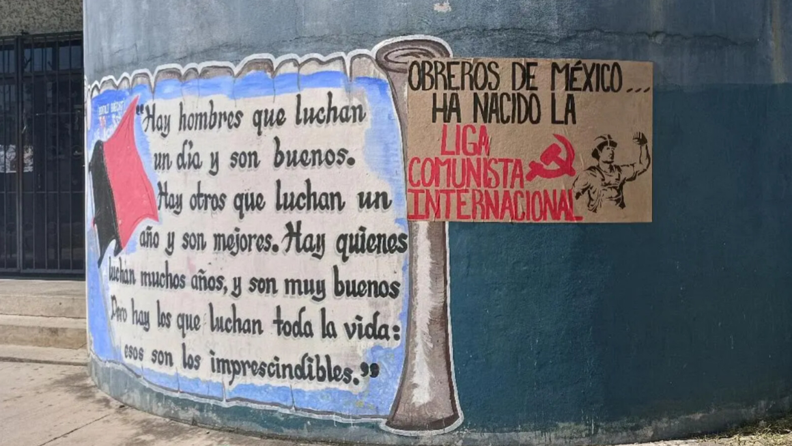

{kind=link}


[This lan. PDF][This lan. ODT][This lan. MD][This lan. TXT][This lan. TXT LIST]
Please select your language 请选择你的语言:
Author: Rosa Minine
Description: O bar Batuq Casa do Samba tem realizado uma série de show presenciais e disponibilizado os mesmos no seu canal no YouTube. Entre eles está a roda de samba
Publish Time: 2023-02-25T00:05:00-03:00
Modified Time: None
Updated Time: None
Images: ['ChorodasTres26Fev.png']
Section: Agenda Cultural
Tags: ['Agenda Cultural', 'bar', 'Batuq Casa Samba', 'cantor', 'cantora', 'compositor', 'Gabby Moura', 'roda samba', 'Sombrinha']
Type: article
O bar Batuq Casa do Samba tem realizado uma série de show presenciais edisponibilizado os mesmos no seu canal no YouTube. Entre eles está a roda desamba Sombrinha convida Gabby Moura , com o cantor, compositor einstrumentistas Sombinha , entrevistado na edição54 do AND, e cantora e compositora Gabby Moura.
Endereço do Batuq Casa do Samba: rua Belizário Pena, 1141, Penha, Rio deJaneiro/RJ.
Abaixo: O vídeo
Source: https://anovademocracia.com.br/sombrinha-convida-gabby-moura-roda-de-samba-online/
Author: socialistiskrevolution
Publish Time: 2023-02-25T04:00:00+00:00
Modified Time: 2023-02-26T19:58:39+00:00
Description: Vi har modtaget dokumentation af paroler, som er blevet malet på vægge i det proletariske nabolag Tingbjerg. Parolerne lyder»Ud på gaden 8. marts! Imod imperialisme og patriarkat!« og »Ud på gaden …
Images: ['1-4.jpg', 'tre.jpg', 'to.jpg']
Type: article
Categories: ['Uncategorized']
Vi har modtaget dokumentation af paroler, som er blevet malet på vægge i detproletariske nabolag Tingbjerg.
Parolerne lyder»Ud på gaden 8. marts! Imod imperialisme og patriarkat!« og »Udpå gaden 8. marts! Kvinder, kæmp og gør modstand!«.


Advertisement
Source: https://socialistiskrevolution.wordpress.com/2023/02/25/kobenhavn-ud-pa-gaden-8-marts/
Author: Alan Warsaw
Publish Time: 2023-02-25T05:11:59+00:00
Update Time: 2023-02-26T17:12:47+00:00
Images: ['bloomberg_1474022425_1474022432-800x445.jpg']
Tags: ['Chhattisgarh', 'CPI (maoist)', 'CPI(maoist)', 'District Reserve Guard', 'DRG', 'India', 'Naxal', 'naxalites', 'naxals', 'police', 'PPW in India', 'Raipur', 'Raipur District', 'Sukma', 'Sukma District']
Categories: ['India', "People's War"]
Sukma District, February 25, 2023: Three District Reserve Guard (DRG)personnel, including an assistant sub inspector (ASI), were killed in anencounter with Naxalites in Chhattisgarh’s Sukma district on Saturday, asenior police official said.
The firefight took place at around 9am between Jagargunda and Kunded villageswhen a DRG team was out on a search operation, Inspector General of Police(Bastar range) Sundarraj P told PTI.
The team had launched an operation from Jagargunda police station limits,located over 400km from capital Raipur, he said.
ASI Ramuram Nag, Assistant Constable Kunjam Joga and Vanjam Bheema were killedin the exchange of fire, he said.
Reinforcement was rushed to the spot, he added.
Source : https://www.tribuneindia.com/news/nation/3-police-personnel-killed-> in-encounter-with-naxalites-in-chhattisgarhs-sukma-483038
Author: Alan Warsaw
Publish Time: 2023-02-25T10:49:38+00:00
Update Time: 2023-02-26T17:49:23+00:00
Images: ['naxals-1561344519-1599042072-800x445.jpg']
Tags: ['Chhattisgarh', 'CPI (maoist)', 'CPI(maoist)', 'District Reserve Guard', 'DRG', 'India', 'Jawan', 'Kanker District', 'Naxal', 'naxalites', 'naxals', 'police', 'PPW in India', 'Sukma', 'Sukma District']
Categories: ['India', "People's War"]
Kanker District, February 25, 2023: An army jawan visiting his nativeplace was shot dead by suspected Naxalites in Chhattisgarh’s Kanker districton Saturday evening, police said.
The assassination took place hours after three police personnel were killed inan encounter with the Naxalites in Sukma district of the state.
The incident in Kanker took place at a market in Useli village under Amabedapolice station limits, an official said here.
Army man Moti Ram Anchla (28), a resident of Bade Tevda village in the area,was on leave.
He was visiting the market when suspected Naxalites, dressed as civilians,shot him, killing him on the spot, the police official said.
The reason behind the killing was yet to be ascertained, he said.
Earlier in the day, three District Reserve Guard personnel were killed in anencounter with Naxalites in Sukma district of the state.
Source : https://www.siasat.com/army-jawan-shot-dead-by-suspected-naxalites-> in-chhattisgarh-2535250/
Author: maoist
Description: Condanniamo fermamente l’aggressione fascista contro gli studenti del liceo Michelangiolo di Firenze Esprimiamo solidarietà alla Dirigente ...
Time: 2023-02-25T13:02:00+01:00
Images: ['d368fd21-2c47-48f7-9bfd-b8336697e4f0%20(1).jpeg']
Condanniamo fermamente l'aggressione fascista contro gli studenti del liceoMichelangiolo di Firenze
.jpeg)
Esprimiamo solidarietà alla Dirigente Scolastica del Liceo Da Vinci di Firenzeminacciata di sanzioni disciplinari dall'infame ministro dell'istruzioneValditara, che ha totalmente cancellato dalla sua nera mente di avere giuratosulla Costituzione per il suo mandato, per la lettera scritta agli studenti incui si condanna il grave accaduto e in cui si fa presente l'importanza diconoscere la storia e i valori profondi dell'antifascismo.
Da fascista qual è, Valditara non ha perso tempo a coprire/minimizzarel'attacco fascista agli studenti, definendo la lettera della Preside «impropria, nessun pericolo di fascismo», delegittimandola pubblicamente.
Un ministro ignobile che attacca gli studenti che lottano contro l'alternanzascuola lavoro che li uccide e che in questa fase deve essere anche al serviziodella guerra imperialista, un ministro che dalla sua poltrona d'oro, comeservo dei servi, deve agire per fare avanzare rapidamente il processo diadeguamento della scuola alle esigenze del sistema capitalistico, il processodi irreggimentazione degli studenti in primis ideologicamente: la primacircolare che mandò agli studenti era una becera esaltazione del capitalismo,quel capitalismo che oggi produce sempre più guerra, miseria, sfruttamento,oppressione, repressione, attacco al lavoro, alla scuola pubblica, ai dirittipiù basilari…, una circolare per attaccare in modo mirato e falso l'esperienzadei paesi socialisti e rivendicare di fatto l'ideologia fascista.
Mentre a rimanere in silenzio è la nera Presidente del consiglio Meloni,troppo impegnata a sponsorizzare attivamente la guerra interimperialista, alfianco di governi come quello di Zelenski con i nazisti dentro!
Ma la Preside, ha risposto alle accuse del Ministro in modo fermo "… Perchésorprendersi delle mie parole e non invece del silenzio rispetto al pestaggioselvaggio di studenti operato per motivi politici? Abbiamo studiato. Siamo inuna scuola. Abbiamo una sufficiente cultura per chiamare le cose con il loronome. Il fatto che siano le mie parole a creare scalpore non può non farciriflettere..."
E' necessario, urgente e non rinviabile unirsi, organizzarsi per lottare a 360gradi contro l'onda nera che questo governo Meloni vuole fare avanzare in ogniambito, a partire da quello ideologico/culturale.
Assemblea Donne/Lavoratrici 23.2.23
Source: https://proletaricomunisti.blogspot.com/2023/02/pc-25-febbraio-solidalieta-dellass.html
Author: fannyhill
Description: la iniziativa al porto di taranto di adesione e solidarietà Pubblicato da tarantocontro
Time: 2023-02-25T13:19:00+01:00
Images: ['lav%20porto%20c%20guerra.jpg', 'lav%20porto%20c%20guerra.jpg']
la iniziativa al porto di taranto di adesione e solidarietà

Pubblicato da tarantocontro

Source: https://proletaricomunisti.blogspot.com/2023/02/pc-25-febbraio-gli-operai-del.html
Author: DEM VOLKE DIENEN
Time: 2023-02-25T23:35:00+00:00
Images: []
Tags: None
Category: None
Bereits Ende letzten Jahres hat Aldi Nord angekundigt mit der „AltmuhltalerMineralbrunnen GmbH" und der „Vitaqua GmbH" zwei von Deutschlands großtenWasser- und Wasserflaschenherstellern zu kaufen. Dies musste vomBundeskartellamt abgenickt werden, da „wettbewerbsbeschrankende Vereinbarungenzwischen Unternehmen [...] grundsatzlichverboten"sind. Es liegt aber nun auf der Hand, dass wenn Aldi sein eigenesFlaschenwasser herstellt, das Unternehmen die Moglichkeit hat, andereWasserhersteller zu verdrangen. Der Fakt, dass es zu legalen Zwecken nochAlternativen zu ihrem Flaschenwasser im Regal geben muss, andert daran nichts.
Es ist nicht so, als ob Wasserhersteller irgend einen besonderen Wert hatten,eigentlich sollte es fur die gesamte Bevolkerung ausreichenden und kostenlosenWasserzugang geben, doch mit zunehmender Unternehmensgroße konnen dieseKonzerne die Versorgung angreifen und uns demnach den Zugriff auf Trinkwasserverwehren um uns zu zwingen ihre Produkte zu kaufen und so auch sicher denallerletzten Cent aus der Arbeiterklasse herauszuquetschen. In denUnterdruckten Nationen ist dies naturlich am Krassesten und Einfachstenaufzuzeigen. An dem Beispiel Nestle: Um ihr Wasserwerk zu rechtfertigen wirdkostenloser Zugang zu Wasser versprochen und behauptet ihr Flaschenwasser seinur eine Alternative dazu. Dann legt das Unternehmen offentliche Brunnen an,bevor die Verbrecher mit ihrem Werk den Grundwasserpegel so weit senken, dassdiese versiegen und bei Gelegenheit Werkabwasser in Flusse laufen lassen umjede Alternative zu ihrem „Produkt" zu vernichten. Ein Produkt, das einlebensnotwendiger Rohstoff ist, welcher vor dem Werkbau deutlich einfacher undumsonst zu haben war. Also: der Zugang zu Wasser wird weggenommen, die Umweltverschmutzt und die Massen sollen zahlen und dankbar sein sich jetztPlastikflaschen leisten zu mussen?! Das Gleiche tun diese Unternehmen auch mitten in Europa, ein sehr nahesBeispiel in die franzosische Gemeinde Vittel, wo Nestle auch ein Werk hat undder Grundwasserpegel dramatisch gesunken ist, was auch zu etwas lokalemWiderstand gefuhrt hat. Ende 2021 wurde das Unternehmen dazu „genotigt" dieWasserentnahme um die Halfte zu reduzieren, woraufhin dieses auch ihrFlaschenwasser vom deutschen Markt entfernt hat. Dies wird als erfolgreicheMaßnahme verkauft, doch folgt diese Maßnahme erst darauf, dass der Umsatz desUnternehmens ohnehineingebrochen ist; Von rund 7425 (2019) Millionen Euro auf6450 (2020) und 4060 (2021) Ein Schelm, wer Boses dabei denkt.
Nun aber zuruck nach Deutschland: Die Altmuhltaler Mineralbrunnen GmbHbefindet sich in der Offensive um sich in Deutschland durchzusetzten. ZumBeispiel hat das Unternehmen 2017 den Konkurrenten Flamingquelle aufgekauft umspater alle Arbeiter zu feuern und das Unternehmen zu schließen. Jetzt hatsich das Unternehmen (als Verlangerung von Aldi) die Rechte fur weitereBrunnen in Hessen und Bayern besorgt. Was in Bayern besonders frappierend ist,ist, dass es kein Entnahmegeld fur Grundwasser gibt, wieso dieser privateKonzern komplett umsonst an die Ressource kommt um sie dann zu verkaufen. Wasdie Situation verschlimmert, ist, dass auch ohne dies der Grundwasserpegel inBayern schon am Sinken ist und das wird hierdurch nur beschleunigt. In einigenGemeinden im Sommer gibt es Wasserknappheit und wahrend sich die Bevolkerungeinschranken soll wie viel Leitungswasser sie nutzen darf kann Aldi weiterabpumpen um die Situation zu verschlimmern. Wie folgende Statistik noch einmal veranschaulicht ist das Mittel zurGarantie fur Trinkwasser nicht, es abzupacken und zu verkaufen, oder privateHaushalte zum Sparen zu notigen, denn diese sind nur fur 11% des gesamtenWasserverbrauches in Deutschland verantwortlich. Dass mit einem so grundlegenden und frei verfugbaren Produkt wie Wasseruberhaupt Milliardenprofite gemacht werden konnen, ist schon ein Verbrechen insich. Die Zerstorung der Umwelt und der Lebensgrundlage unzahliger Menschendurch große Unternehmen wie Nestle oder Aldi setzt dem allerdings die Kroneauf.
Author: fannyhill
Description: Presenti al presidio lavoratori, operai ex Ilva, sindacati di base (Slai cobas e Cobas confederazione), Comitati di quartiere citta' vekkia,...
Time: 2023-02-25T6:02:00+01:00
Images: ['trb%201.JPG']
Presenti al presidio lavoratori, operai ex Ilva, sindacati di base (Slai cobase Cobas confederazione), Comitati di quartiere citta' vekkia, rappresentantiSinistra anticapitalista e di anarchici di Bari; importante è stata lapartecipazione attiva degli studenti , Fgc, che nelle prime ore delmattino avevano dato vita ad un sit in itinerante al centro citta' contro laguerra imperialista.
Contestato lo sproporzionato dispiegamento di Digos, polizia, che èarrivata anche a bloccare di fatto l'entrata del Tribunale, ostacolando ilpassaggio di avvocati, cittadini.
ASCOLTA GLI INTERVENTI
https://drive.google.com/file/d/1qTJZXWW_kzi2ECdw2cRrd8Xw3PGnfYzH/view?usp=share_link

Source: https://proletaricomunisti.blogspot.com/2023/02/pc-25-febbraio-presidio-ieri-al.html
Author: ΚΚΕ(μ-λ)
Time: 2023-02-25T83:00:00-04:00
Description: Μια ανάσα, πλέον, από την προκήρυξη των εκλογών γίνεται ολοφάνερο πως όλες οι βασικές αστικές πολιτικές δυνάμεις ΝΔ, ΣΥΡΙΖΑ, ΠΑΣΟΚ-ΚΙΝΑΛ και οι παραφυάδες τους έχουν διατάξει τις δυνάμεις τους σε θέση εκλογικής μάχης και πασχίζουν να θέσουν διλήμματα για να εξασφαλίσουν το καλύτερο δυνατό εκλογικό αποτέλεσμα.
Images: ['ekloges.jpg']
Type: article

Είναι σε εξέλιξη μια παρατεταμένη πολύμηνη προεκλογική περίοδος όπου ηημερομηνία διεξαγωγής των εκλογών με το λεγόμενο σύστημα της απλής αναλογικήςμεταφέρεται από μήνα σε μήνα και από εβδομάδα σε εβδομάδα.
Μια ανάσα, πλέον, από την προκήρυξή τους και γίνεται ολοφάνερο πως όλες οιβασικές αστικές πολιτικές δυνάμεις ΝΔ, ΣΥΡΙΖΑ, ΠΑΣΟΚ-ΚΙΝΑΛ και οι παραφυάδεςτους έχουν διατάξει τις δυνάμεις τους σε θέση εκλογικής μάχης και πασχίζουν ναθέσουν διλήμματα για να εξασφαλίσουν το καλύτερο δυνατό εκλογικό αποτέλεσμα.
Η ΝΔ παρουσιάζει το κυβερνητικό της έργο και τα στελέχη της σε όλα τα ΜΜΕ καιτις εξορμήσεις τους αναφέρονται παρά τις κρίσεις, πανδημία-πόλεμο στηνΟυκρανία, σε μειώσεις φόρων, αύξηση κατώτατου μισθού, ψηφιοποίηση του κράτους,πολλαπλασιασμό των επενδύσεων, περιορισμό των μεταναστευτικών ροών καιεξοπλισμό της χώρας.
Οι κυβερνητικοί ισχυρίζονται πως η χώρα είναι οικονομικά πιο ισχυρή από κάθεάλλη φορά τα τελευταία 20 χρόνια. Πως το ίδιο ισχύει για τη γεωστρατηγικήδύναμη που έχει συγκεντρώσει η Ελλάδα, σε σύγκριση με τον εξ ανατολής γείτονα,χάρη στην εξωτερική πολιτική του Κ. Μητσοτάκη.
Η ΝΔ θέτει τον εαυτό της στη «σωστή πλευρά της ιστορίας» και ζητά την ψήφο τουλαού για άλλη μια τετραετία, για να ξεδιπλώσει σε καλύτερο πλέον περιβάλλον τοπρόγραμμά της. Προσπαθεί να περιορίσει-ενσωματώσει τις ακροδεξιές απώλειες καιπροειδοποιεί πως με τη διακυβέρνηση ΣΥΡΙΖΑ κάηκε ο τόπος το 2015 και πως τοπάθημα πρέπει να γίνει μάθημα το 2023.
Ο ΣΥΡΙΖΑ παρουσιάζεται να δίνει έναν αγώνα ιστορικών διαστάσεων, για νααπαλλαγεί ο τόπος από την επάρατη Δεξιά του Μητσοτάκη. Θεωρεί τον εαυτό τουκορμό του λεγόμενου προοδευτικού χώρου και κάνει κάλεσμα στις μικρότερεςδυνάμεις αυτού του χώρου για προγραμματικές συγκλήσεις.
Τα στελέχη του διατυμπανίζουν σε όλους τους τόνους πως η νίκη του ΣΥΡΙΖΑ στιςπρώτες εκλογές, με τη λεγόμενη απλή αναλογική, είναι η πρόκληση αλλά και ηευκαιρία για να ηγηθεί το κόμμα αυτό της επόμενης προοδευτικής διακυβέρνησης.
Ο ΣΥΡΙΖΑ δηλώνει πιο ώριμος, απαλλαγμένος από βαρίδια του παρελθόντος και πιοέτοιμος να ξαναγίνει κυβέρνηση. Στην καταστροφική, όπως τη χαρακτηρίζει, σεόλα τα επίπεδα κυβερνητική θητεία της ΝΔ, αντιπαραθέτει το τεκμηριωμένο καικοστολογημένο πρόγραμμά του, που θα αποκαταστήσει την κοινωνική και οικονομικήδικαιοσύνη και θα επαναφέρει τη χώρα σε τροχιά δίκαιης και βιώσιμης ανάπτυξηςγια όλους!
Το ΠΑΣΟΚ-ΚΙΝΑΛ προσπαθεί να διαφοροποιηθεί και από τη ΝΔ και από τον ΣΥΡΙΖΑ,χρεώνοντας στα δυο αυτά κόμματα δεξιό και αριστερό λαϊκισμό αντίστοιχα. Θεωρείότι έχουν τεράστιες ευθύνες για την υποβάθμιση της δημοκρατίας και των θεσμών.
Το ΠΑΣΟΚ-ΚΙΝΑΛ ζητά την ψήφο για να ανατραπούν οι συσχετισμοί και έτσι ναπαίξει ρόλο συνεργάτη και εγγυητή δημοκρατικών κατακτήσεων και ουσιαστικώνμεταρρυθμίσεων σε κυβέρνηση συνεργασίας.
Με τόσα ψέματα που ντύθηκαν οι λέξεις…
Είμαστε σε προεκλογική περίοδο και οι σειρήνες των αστικών κομμάτων δυναμώνουνστα αυτιά μας. Τα εκλογικά διλήμματα θα φουσκώσουν.
Το βέβαιο είναι πως, για άλλη μια φορά, τα σημαντικά διακυβεύματα είναι σεαυτά που ζούμε και σε αυτά που επείγουν για το σύστημα και δεν λέγονται.
Τα όποια δωράκια με την μορφή επιδομάτων, καλαθιών, δήθεν αυξήσεωνφωτογραφίζουν μια ολάκερη περίοδο στην οποία τα λαϊκά στρώματα και οιεργαζόμενοι ματώνουν στην κυριολεξία. Ο πληθωρισμός καλπάζει. Τρόφιμα,ενέργεια, νοίκια, όλα στα ύψη. Οι μισθοί εξανεμίζονται. Τα κυβερνητικά ψίχουλαστήριξης δεν καλύπτουν καθόλου τις πραγματικές ανάγκες των νοικοκυριών.
Το σάπιο καπιταλιστικό σύστημα σε βαθιά κρίση -παντού και στη χώρα μας- θαφορτώνει ολοένα και περισσότερα βάρη στις πλάτες των φτωχών λαϊκών στρωμάτων.Και η κυβερνητική πολιτική, εξυπηρετώντας σταθερά το ξένο και ντόπιο κεφάλαιο,θα μανατζάρει τη διπλή εκμετάλλευση, διαλύοντας κατακτήσεις και δικαιώματα.
Και αναμένονται και άλλα δεινά από το βίαιο ξαναμοίρασμα του κόσμου από τουςιμπεριαλιστές. Σαν αυτά που ζει ο λαός της Ουκρανίας με τους χιλιάδες νεκρούςαπό τον ανταγωνισμό ΗΠΑ-ΝΑΤΟ και Ρωσίας. Για αυτούς τους ανταγωνισμούς και τιςεπιπτώσεις του πολέμου κάνουμε ήδη και θα μας πουν ξανά να κάνουμε και νέεςθυσίες.
Την επομένη των εκλογών, οι ιμπεριαλιστές και οι ανταγωνισμοί τους πουκομματιάζουν χώρες, το σάπιο καπιταλιστικό σύστημα, το ξένο και ντόπιοκεφάλαιο που ξεζουμίζουν τους εργαζομένους και τα αστικά κόμματα που υπηρετούναυτό το σύστημα θα είναι εδώ και αυτή είναι η μία πλευρά της ιστορίας. Οι λαοίκαι οι εργαζόμενοι είναι η άλλη πλευρά της ιστορίας.
Οι ηγεσίες σε ΝΔ, ΣΥΡΙΖΑ και ΠΑΣΟΚ-ΚΙΝΑΛ έχουν πάρει τις αποφάσεις τους καιέχουν διαλέξει στρατόπεδο! Είναι σε πλήρη εξέλιξη εδώ και καιρό η μετατόπισησυνολικά του πολιτικού σκηνικού πιο δεξιά, πιο αντιλαϊκά, πιο αντιδραστικά.
Γι’ αυτό, όποιο εκλογικό συσχετισμό μεταξύ των αστικών κομμάτων και να βγάλειη κάλπη στον πρώτο, στον δεύτερο ή σε όποιο γύρο χρειαστούν, όποια κυβερνητικήλύση προκύψει από αυτό τον συσχετισμό, το αποτέλεσμα θα είναι το ίδιο για τονλαό, τους εργαζόμενους, τη νεολαία, τους συνταξιούχους.
Αυτοί είναι που θα ζήσουν σε μια χώρα ξέφραγο αμπέλι για να υπηρετηθούν τααμερικανοΝΑΤΟϊκά συμφέροντα. Σε μια χώρα που ξεπουλάει για να θησαυρίσουν οιεπενδυτές. Σε μια χώρα που απαξιώνεται κι άλλο η εργασία. Σε μια χώρα μεμεγαλύτερη φτωχοποίηση των ανθρώπων της. Με ισοπέδωση δικαιωμάτων σε περίθαλψηκαι παιδεία. Και με ένταση της φασιστικοποίησης, για να μπει ο λαός στον γύψοκαι, έτσι, να αποτραπούν αντιστάσεις και διεκδικήσεις.
Θα αποδεχτούμε τον εκβιασμό των δυνάμεων του συστήματος που επιχειρούν ναεπιβάλουν σιγή νεκροταφείου και να εγκλωβίσουν τη λαϊκή οργή σε εκλογικάψευτοδιλήμματα;
Οι πολιτικές δυνάμεις που αναφερόμαστε στο κίνημα, τι πρέπει να κάνουμε για νααντιμετωπίσουμε και να ανατρέψουμε αυτή την κατάσταση;
Τι να επιλέξουμε;
Μήπως δεν είναι του παρόντος να αναλογιστούμε το βάθος των εξελίξεων και τηνκρισιμότητα της περιόδου και να απευθύνουμε μαζικό κάλεσμα αγώνα προς τον λαό,τη νεολαία και την εργατική τάξη;
Μήπως δεν είναι του παρόντος να διαλέξουν οι εργαζόμενοι, οι νέοι, οικαταπιεσμένοι τον δρόμο της οργάνωσης, της αντίστασης, της διεκδίκησης και τηςαναμέτρησης με τις δυνάμεις του συστήματος;
Μήπως δεν είναι του παρόντος να κατατίθενται προτάσεις που θέλουν να δώσουνστον λαό τη δυνατότητα να αναμετρηθεί με τις εκλογικές αυταπάτες και τηνπροσμονή του ενός ή του άλλου «σωτήρα» και να μπει ο ίδιος στο προσκήνιο τουαγώνα και της διεκδίκησης;
Μήπως δεν είναι του παρόντος να κατατίθενται προτάσεις που αναδεικνύουν τηναναγκαιότητα μπροστά στη ζοφερή κατάσταση που ζούμε να γίνει η μέγιστη δυνατήπροσπάθεια στην κατεύθυνση ενός μαζικού λαϊκού ξεσηκωμού;
Κι ενώ τα παραπάνω ερωτήματα μοιάζουν ρητορικά, έχουν, όσο μας αφορά, σαφήαπάντηση. Δεν είναι, όμως, το ίδιο καθαρό για μια σειρά πολιτικών δυνάμεων καιχώρων. Από το ΚΚΕ, δυνάμεις της εξωκοινοβουλευτικής αριστεράς μέχρι τηναναρχία/αυτονομία, άλλες είναι οι του παρόντος προτεραιότητες.
Κάθε κίνηση του ΚΚΕ γίνεται με στόχο τις κάλπες και η εκλογική του ενίσχυσηπροβάλλεται ως η λύση για κάθε πρόβλημα. Το κόμμα αυτό έχει κηρύξει στάσηκινήματος. Προσπαθεί να θολώσει τα νερά στους οπαδούς του και ταυτόχρονα νααναδείξει ένα πιο συστημικό προφίλ, καταθέτοντας διαρκώς κάθε είδουςνομοθετικές προτάσεις. Διακηρύσσει το δικό του «κυβερνητικό πρόγραμμα»,εντείνοντας τη σύγχυση και τις αυταπάτες.
Τα ίδια αδιέξοδα βιώνει και η πλειοψηφία της εξωκοινοβουλευτικής αριστεράς. Το«φάντασμα» του κυβερνητισμού συνεχίζει να πλανάται πάνω από τις απόψεις καιτις προτάσεις που κατατίθενται. Η ανάγκη της αντίστασης και της διεκδίκησηςυποβαθμίζονται και ξεβολεύουν, αφού ταράζουν τα ήρεμα νερά των προεκλογικώνσχεδιασμών. Η αυταπάτη της «αριστερής διαχείρισης» επανέρχεται δριμύτερη στοεξωκοινοβούλιο, καθώς δεν εκλείπουν και οι «ελπίδες» που γεννούν σε δυνάμειςτου χώρου τα ενδεχόμενα που αφήνει η απλή αναλογική. Οι εκλογές είναι ηπροσωρινή συγκολλητική ουσία, είναι η «κάλπικη» ενότητα για μια σειρά δυνάμειςτου εξωκοινοβουλίου που δε συναντιούνται ούτε σε μια κοινή πορεία στον δρόμο.
Ο χώρος της αναρχίας καλεί σε μαζική αποχή. Θεωρεί χαμένη την ψήφο στα κόμματαεξουσίας και διπλά χαμένη(!) την ψήφο στην αριστερά χωρίς εξαιρέσεις. Είναι οίδιος χώρος που το 2015 «παρασύρθηκε» από την κυβερνητική λύση της πρώτηςφοράς αριστερά και το μεγαλύτερο κομμάτι του οδηγήθηκε να ψηφίσει ΣΥΡΙΖΑ. Ηθέση της αναρχίας για αποχή από αυτές τις εκλογές είναι θέση συμβατή με τηναποχή του χώρου αυτού από κάθε προσπάθεια να πάρουν οι μάζες την υπόθεση τηςαντίστασης και της διεκδίκησης στα δικά τους χέρια. Οι εργάτες, οι φοιτητέςείναι, για την αναρχία, οι παρατηρητές των ενεργειών και των αποφάσεων αυτώντων αυτόκλητων «πεφωτισμένων», που φλυαρούν για το «από τα κάτω», ενώ στηνπράξη προωθούν τα πάντα «από τα πάνω».
Ως ΚΚΕ(μ-λ), έχοντας επίγνωση των αδυναμιών μας και με πυξίδα τις πραγματικέςαπαιτήσεις της περιόδου, δεν επενδύουμε σε εύκολες και ταχύρρυθμες επιλογές.Για μας, τα «εδώ και τώρα» δεν είναι τα πραγματικά ζητούμενα του παρόντος.Πιστεύουμε πως οι αυταπάτες δεν διαρκούν πολύ και γίνονται θρύψαλα,προκαλώντας απογοήτευση, αποστράτευση και καθυστέρηση από το κύριο ζητούμενο.
Και ποιο είναι αυτό; Εξακολουθούμε να θεωρούμε ότι οι απαντήσεις σταπροβλήματα του λαού βρίσκονται στο κίνημα και την ταξική πάλη. Στην αναμέτρησημε το σύστημα, τους υπηρέτες του και τα δεκανίκια του. Η ανάπτυξη μαζικούλαϊκού κινήματος είναι η πραγματική διέξοδος για τον λαό και τουςεργαζόμενους. Στην κίνηση αναδεικνύονται και αναζητούν απαντήσεις οιαδυναμίες, οι ελλείψεις, οι προοπτικές.
Για την ενίσχυση αυτής της κατεύθυνσης ζητάμε στήριξη από τον λαό, τουςεργάτες, τους φοιτητές, τους μαθητές. Γιατί αυτή είναι η κατεύθυνση που όσο θαενισχύεται, θα καθιστά τις λαϊκές δυνάμεις πρωταγωνιστές και υποκείμενα τηςιστορίας τους και όχι πιόνια στις διαθέσεις του συστήματος και παρατηρητέςπάσης φύσης αδιέξοδων αυταπατών.
Source: https://www.kkeml.gr/ps935/ekloges/
Author: ΚΚΕ(μ-λ)
Time: 2023-02-25T85:00:00-04:00
Description: Η ΚΝΕ έχει κάνει τους λογαριασμούς της με το σύστημα της εξάρτησης και της εκμετάλλευσης δεκαετίες τώρα. Στην ένταση της επίθεσης και τις πιέσεις του συστήματος απαντάει με συνεχή δεξιά μετατόπιση σε θέσεις και πρακτική, κομματική περιχαράκωση και εν τέλει αναχώρηση από τα πραγματικά επίδικα της ταξικής πάλης.
Images: ['13-synedrio-kne-3.jpg']
Type: article

Ολοκληρώθηκε το 13ο συνέδριο της ΚΝΕ στις 10-12 Φλεβάρη. Οι σύνεδροιυπερψήφισαν ομόφωνα τις θέσεις του προηγούμενου ΚΣ και εξέλεξαν καινούργιο. Τοσυνέδριο είχε τίτλο " Είμαστε η σπίθα που κάνει τα σκοτάδια φως! Με τη δύναμητων επαναστατικών ιδεών-Για το σοσιαλισμό. Τολμάμε το μεγάλο βήμα στο μέλλον,με το ΚΚΕ. ΚΝΕ δυνατή παντού". Πίσω από τον φαντεζί τίτλο του, το συνέδριοείχε ουσιαστικό αντικείμενο την κομματική ενίσχυση–περιχαράκωση της νεολαίαςτου ΚΚΕ σαν απάντηση στα ζόρια που της βάζει η ένταση της ταξικής πάλης, καθώςκαι το προεκλογικό λάδωμα ενός μηχανισμού για να ριχτεί στις μάχη στιςεπερχόμενες κάλπες, δηλαδή αυτό που είναι κατοχυρωμένο σε αυτόν το χώρο ως ημητέρα των μαχών.
Η εκλογική αγωνία ήταν έντονη και εκφράστηκε με την παρέλαση τις μέρες τηςδιαδικασίας πλειάδας υποψηφίων βουλευτών του ΚΚΕ, ενώ κυριάρχησε και στοκλείσιμο της διαδικασίας από τον απερχόμενο Γραμματέα του ΚΣ Αμπατιέλο. Καιφυσικά ήταν ο κορμός της τοποθέτησης Κουτσούμπα από το βήμα του συνεδρίου, πουκάλεσε τη νεολαία να "κάνει τη διαφορά" ώς και "να φέρει τα πάνω κάτω" στιςεπερχόμενες βουλευτικές. Εδώ να ξεκαθαρίσουμε ότι είναι θεμιτό για μιαπολιτική νεολαία να προετοιμάζει την εκλογική της παρέμβαση, αλλά όταν αυτόείναι το μοναδικό πραγματικό πολιτικό επίδικο ενός συνεδρίου που γίνεται κάθετέσσερα χρόνια μέσα σε έναν κυκεώνα σαρωτικών εξελίξεων που αφορούν τη ζωή τουλαού, τότε καταλήγει σε εκλογικό κρετινισμό.
Δίνοντας τον τόνο, ο Κουτσούμπας έκανε λόγο για τις πολλαπλές πολιτικές μάχεςπου είναι μπροστά, διευκρινίζοντας βέβαια ότι εννοεί τις βουλευτικές,δημοτικές, περιφερειακές του επόμενου διαστήματος και φτάνοντας ώς τιςευρωεκλογές που θα γίνουν του χρόνου. Λες και μέχρι τον Μάιο του 2024 ηνεολαία δεν θα πρέπει να δώσει άλλη κεντρική πολιτική μάχη πέρα από το νακυνηγάει τις διάφορες κάλπες!
Όσον αφορά τις πολιτικές θέσεις που υπερψήφισε το σώμα των συνέδρων, έχουμεαναφερθεί αναλυτικά όταν δημοσιεύτηκαν (βλέπε προηγούμενα φύλλα της «Π.Σ.»).Συνοπτικά θα ξανατονίσουμε ότι η ισχνή παρουσία των πολιτικών εξελίξεων καιεκτιμήσεων στο πολυσέλιδο κείμενο των θέσεων μόνο τυχαία δεν είναι . Δενγίνεται, δηλαδή, να περνάει καταιγίδα αντιλαϊκών νομοθετημάτων σε όσα καίνε τηνεολαία, στα εργασιακά, στην εκπαίδευση, να είναι σε εξέλιξη η θανάσιμηεμπλοκή της χώρας στο πόλεμο στην Ουκρανία και η ηγεσία της ΚΝΕ να κάνει ότιδεν παίρνει χαμπάρι και να αφιερώνει ένα μεγάλο μέρος από το συνέδριο για νασυζητήσει για την παρέμβασή της στον πολιτισμό και στα σόσιαλ μίντια.
Η υποβάθμιση της συζήτησης για τα βασικά δεδομένα που παράγει η επίθεση τηςσυστήματος στο λαό και στη νεολαία, για τους όρους με τους οποίους αυτήεξελίσσεται προετοιμάζει την αναχώρηση από τα κεντρικά επίδικα της ταξικήςπάλης στη χώρα. Τη διαφυγή από το να αναλάβει ευθύνες για την οργάνωση τηςαντίστασης και τη διεκδίκησης των μαζών σε αυτή την πολιτική. Αυτή η τακτικήέχει γίνει άλλωστε μόνιμη συνταγή αυτού του χώρου όταν έρχονται τα δύσκολα σεμια σειρά ζητήματα που τέθηκαν την προηγούμενη περίοδο, και ιδιαίτερα ότανσυνδυάζεται με κίνηση κόσμου και υπάρχει ο κίνδυνος να αποκαλυφθεί η ουσία τηςρεφορμιστικής γραμμής της ΚΝΕ.
Γι’ αυτό και είναι χαρακτηριστική η προσπάθεια του απολογισμού που ψηφίστηκενα αντιστρέψει την πραγματικότητα και να εμφανίσει την ΚΝΕ πρωτοπόρα εκεί πουστην καλύτερη περίπτωση ήταν παρακολουθητής από απόσταση της δράσης των μαζών,αν δεν έπαιζε ρόλο αναχώματος με τις θέσεις και την πρακτική της. Γιατί τιάλλο πέρα από προσπάθεια να γίνει το μαύρο άσπρο είναι, στο κλείσιμο τηςδιαδικασίας από τον γραμματέα Αμπατιέλο, να τονίζεται ότι ‘’πρωταγωνιστήσαμεγια να καταγγελθεί ο πόλεμος στην Ουκρανία’’ όταν η ΚΝΕ έχει να κινητοποιηθείαπό τις μέρες που ξεκίνησε ο πόλεμος; Όταν κατά την πρόσφατη επίσκεψη τουΜπλίνκεν στην Ελλάδα περιόρισε την αντίδραση σε μερικές εκατοντάδες μέλη τηςστο πάρκο Ελευθερίας (Αθήνα), ενώ στις συγκεντρώσεις που πραγματοποιήθηκανπανελλαδικά ήταν απούσα;
Τι άλλο από ακραία λαθροχειρία είναι να υποστηρίζεται ότι ‘’...συνέβαλε ναμείνει ο νόμος Χατζηδάκη στα χαρτιά’’ όταν η εφαρμογή του αντεργατικούεκτρώματος τρέχει με χίλια στους χώρους δουλειάς, όταν μάλιστα σε ό,τι αφοράτις διατάξεις για το μητρώο των σωματείων οι δυνάμεις του ΚΚΕ κάνουν τα στραβάμάτια στην υλοποίησή του; Όταν με ύφος χιλίων καρδιναλίων τονίζεται ουποτιθέμενος πρωτοπόρος ρόλος της ΚΝΕ στις σχολές και την περίοδο που δινότανη μάχη ενάντια στο νόμο Κεραμέως πετούσε την μπάλα στην εξέδρα, παίρνονταςπρωτοβουλίες όπως οι ‘’φοιτητές ξανά’’; Και ο κατάλογος των διαστρεβλώσεων δενέχει τέλος…
Ο αφόρητος βερμπαλισμός και οι διαστρεβλώσεις του συνεδρίου παντρεύονται μεγενικόλογες αναφορές για το σοσιαλισμό σε μια προσπάθεια να δειχτεί ότι εδώ τοπράγμα θέλουμε να πάει μακριά. Όσο αναγκαία και αν είναι η προβολή τηςεπαναστατικής προοπτικής, όσο απαραίτητο και αν είναι το ανέβασμα τουιδεολογικού-μορφωτικού επιπέδου των μελών μιας κομμουνιστικής οργάνωσηςνεολαίας, αυτό δεν μπορεί να γίνει ξέχωρα από τη συγκρότηση των μετώπων πάληςστο σήμερα και για την υπηρέτησή τους. Εκεί είναι που διαμορφώνονται όροι γιανα ανοίξει ο άλλος δρόμος, εκεί είναι που οι επαναστατικές ιδέες αποκτούνυλική δύναμη και σε μια πορεία γίνονται ακατανίκητες. Και αυτή η αγωνία, πουπροϋποθέτει σύγκρουση στην πράξη με τις βασικές επιλογές του συστήματος τηςεξάρτησης και της εκμετάλλευσης, απουσιάζει από την ΚΝΕ. Γι’ αυτό και οικομμουνιστικές κορόνες που εξαπέλυσαν ο Κουτσούμπας, τα στελέχη τις ΚΝΕ καιβρίθουν οι Θέσεις καταλήγουν να συνιστούν καρικατούρα οράματος, που δεν μπορείνα εμπνεύσει και να αποτελέσει κινητήριο δύναμη για τις μάχες του σήμερα. Ότανμάλιστα επιχειρούν να γίνουν συγκεκριμένοι, τα πράγματα γίνονται χειρότερακαθώς παραπέμπουν στις ασκήσεις μεταφυσικής του Προγράμματος του ΚΚΕ, εκεί πουοι φωστήρες του κόμματος έχουν από τώρα ταχτοποιήσει τη σοσιαλιστικήοικοδόμηση…
Η ΚΝΕ έχει κάνει τους λογαριασμούς της με το σύστημα της εξάρτησης και τηςεκμετάλλευσης δεκαετίες τώρα. Στην ένταση της επίθεσης και τις πιέσεις τουσυστήματος απαντάει με συνεχή δεξιά μετατόπιση σε θέσεις και πρακτική,κομματική περιχαράκωση και εν τέλει αναχώρηση από τα πραγματικά επίδικα τηςταξικής πάλης. Αυτό πιστοποίησε, προχώρησε στο συνέδριό της, με μπόλικαπροεκλογικά ταρατατζούμ. Εκμεταλλεύεται την υποχώρηση του κινήματος, τηναπουσία αντίπαλου δέους από τα αριστερά και μασκαρεύει τη συμβιβαστικήρεφορμιστική γραμμή σε τάχα μου διεκδικητική ώς και επαναστατική. Το θέμα όμωςείναι ότι η νεολαία από τα σχολεία ώς τα πανεπιστήμια και τους εργασιακούςχώρους ασφυκτιά στα αδιέξοδα που τη ρίχνει η πολιτική του συστήματος. Παλεύεινα πάρει ανάσα, την εξοργίζει η καταπίεση, αναζητά διέξοδο και προοπτική. Τοπολιτικό κενό χάσκει και η ΚΝΕ ούτε θέλει ούτε μπορεί να το καλύψει… Θα τοαπαντήσουν «οι σεισμοί που μέλλονται να ‘ρθουν».
Source: https://www.kkeml.gr/ps935/kne/
Author: ΚΚΕ(μ-λ)
Time: 2023-02-25T87:00:00-04:00
Description: Είναι καθαρό ότι οι καλλιτεχνικοί κλάδοι, εργαζόμενοι και σπουδαστές, δεν έχουν τίποτα να διαπραγματευτούν, τίποτα να συζητήσουν με το σύστημα της υποταγής και της εκμετάλλευσης. Να συνεχίσουν το δίκαιο αγώνα τους μαζικά και να συσπειρωθούν ανυποχώρητα στο αίτημα της απόσυρσης του ΠΔ και της κατοχύρωσης των εργασιακών, επαγγελματικών και σπουδαστικών δικαιωμάτων τους, μέχρι τη νίκη.
Images: ['καλλιτέχνες1.jpg']
Type: article

Ο ξεσηκωμός
Από τις πρώτες κιόλας μέρες της γνωστοποίησης του ΠΔ 85/2022, ο καλλιτεχνικόςκόσμος ξεσηκώθηκε. Καλλιτέχνες των παραστατικών τεχνών και σπουδαστές τωνκλάδων αυτών μπήκαν σ’ έναν αγώνα που οι διαστάσεις του γρήγορα ξεπέρασαν κάθεπροσδοκία. Όχι αναίτια, αφού η κατάταξη των αποφοίτων στην κατηγορία ΔΕ(δευτεροβάθμιας εκπαίδευσης) βάζει θεσμικά ταφόπλακα σε κομμάτι τωνεπαγγελματικών τους δικαιωμάτων και την αναγνώριση των σπουδών και των πτυχίωντους, ενώ ταυτόχρονα αποτελεί ευθύ χτύπημα στα εργασιακά τους δικαιώματα.
Στο επίκεντρο απ’ την πρώτη στιγμή ήταν η άμεση απόσυρση του ΠΔ και ηκατοχύρωση των επαγγελματικών δικαιωμάτων, ενώ έχει τεθεί και το ζήτημα τηςίδρυσης δημόσιων και δωρεάν πανεπιστημιακών σχολών για τους κλάδους τωνπαραστατικών τεχνών. Τα άμεσα αντανακλαστικά των καλλιτεχνικών κλάδων είναιαποτέλεσμα της συσσωρευμένης πίεσης, της εκμετάλλευσης και της διάλυσης τωνεργασιακών δικαιωμάτων, που κυριαρχούν σ’ αυτούς.
Εδώ και δύο μήνες, τον τόνο δίνει η συνεχής κλιμάκωση του αγώνα μεδιαδηλώσεις, απεργίες, καταλήψεις στις δραματικές σχολές του Εθνικού Θεάτρου,του ΚΘΒΕ και του ΔΗΠΕΘΕ Πάτρας, παραίτηση των καθηγητών των σχολών αυτών,αποχές απ’ τα μαθήματα στις ιδιωτικές δραματικές σχολές, καταλήψεις σε τμήματατων πανεπιστημίων, καθώς και σε καλλιτεχνικά και μουσικά σχολεία. Η διάρκειακαι η μαζικότητα, η από κοινού διεκδίκηση των κλάδων των παραστατικών τεχνών,δίνει σ’ αυτόν τον αγώνα ιστορικές διαστάσεις καθώς δεν έχει προηγούμενο.Σχεδόν καθολική ήταν η συμμετοχή των κλάδων στην 24ωρη και τη 48ώρη απεργία,με πολλές χιλιάδες κόσμου να συμμετέχουν στα συλλαλητήρια και τις συναυλίεςστήριξης των αγωνιζόμενων κλάδων.
Η στάση της κυβέρνησης
Η κυβέρνηση έφερε το ΠΔ αποφασισμένη να το εφαρμόσει και να χτυπήσει στηνουσία τους εργασιακά, επαγγελματικά και σπουδαστικά δικαιώματα. Η αμετακίνητηστάση της απ’ την αρχή είναι η ωμή παραδοχή ότι η στρατηγική επίθεση τουσυστήματος στον κόσμο της δουλειάς δεν εξαιρεί κανέναν και πόσο μάλλον ένανχώρο ήδη κατακερματισμένο και αποσυγκροτημένο, βιώνοντας τη βία και τιςεξαθλιωμένες εργασιακές συνθήκες εδώ και χρόνια.
Απ’ την άλλη, ο καλλιτεχνικός κόσμος, τα τελευταία τρία χρόνια, με βάση τηνκατάσταση που βιώνει ελλείψει ΣΣΕ στις ιδιωτικές παραγωγές και στα ΔΗΠΕΘΕ, τιςβίαιες και κακοποιητικές συμπεριφορές ανθρώπων σε εργοδοτικές θέσεις (με τηνκυβέρνηση να καλύπτει βιαστές και παιδεραστές με αποκορύφωμα τον Λιγνάδη), τηνεξαίρεση του μεγαλύτερου μέρους των κλάδων αυτών απ’ το επίδομα κατά τηδιάρκεια της πανδημίας, άρχισε να συγκροτείται και να διεκδικεί συλλογικά. Ένασύστημα που έχει στόχο να διαλύσει κάθε ίχνος δικαιώματος, αυτήν την επιστροφήστη συλλογική πάλη θέλει να την καταστείλει εν τη γενέσει της.
Μπροστά στις πρωτοφανείς διαστάσεις του δίκαιου αγώνα των καλλιτεχνών, ηκυβέρνηση αμετακίνητη, χρησιμοποίησε όλο της το οπλοστάσιο. Αποσιώπησή του απ’τα ακριβοπληρωμένα της ΜΜΕ, απαξίωση, εμπαιγμό και λάσπη. Όλα αυτά δενστάθηκαν ικανά να τον καταστείλουν, αλλά αντίθετα προκάλεσαν ακόμα μεγαλύτερηοργή, με αποτέλεσμα ο αγώνας να δυναμώσει και να μαζικοποιηθεί ακόμαπερισσότερο.
Ο πρώτος ελιγμός της κυβέρνησης ήταν η κατάθεση τροπολογίας, η οποία στηνουσία της βάθαινε την επίθεση και διασπούσε περαιτέρω τα εργασιακά δικαιώματα,διαχωρίζοντας μισθολογικά το αμιγώς καλλιτεχνικό απ’ το εκπαιδευτικό καιδιοικητικό έργο. Οι κλάδοι δεν έπεσαν στη φάκα και συνέχισαν δυναμικά καιμαζικά. Η σχεδόν καθημερινή μαζική παρουσία των καλλιτεχνών στον δρόμο, ησυνεχής κλιμάκωση του αγώνα, η εξωστρέφειά του κι η προσπάθεια να συνδεθεί μετον αγώνα των εργαζομένων στο ΥΠΠΟΑ και τους εκπαιδευτικούς δημιούργησεκεντρική πολιτική πίεση στην κυβέρνηση.
Ο Μητσοτάκης χρησιμοποίησε το εργαλείο του «διαλόγου» με τις διοικήσεις τωνσωματείων των εργαζομένων, των κρατικών θεάτρων και των σπουδαστών,προκειμένου να τους καλέσει στην υποταγή, τη συνθηκολόγηση και τη συνυπογραφήτης επίθεσης που δέχονται. Δεν έκανε τίποτα άλλο παρά να επιμείνει στις θέσειςτης κυβέρνησης. Δεν απέσυρε το ΠΔ, δεν εξαίρεσε τους καλλιτέχνες από αυτό, δεντους αναγνώρισε ως κατηγορία ΤΕ (τεχνολογικής εκπαίδευσης). Πρότεινε ειδικόμισθολογικό καθεστώς, το οποίο θα ορίζεται με ΚΥΑ. Με χυδαιότητα, κάλεσε τουςαγωνιζόμενους σπουδαστές να σταθούν δίπλα του στην κατάργηση του άρθρου 16,για να διαστρεβλώσει επικοινωνιακά τον αγώνα τους.
Οι πιέσεις
Από πολύ νωρίς αυτός ο αγώνας άρχισε να ενοχλεί. Οι πιέσεις κι οι εκβιασμοίαπ’ τους εργοδότες έγιναν καθημερινότητα και μοχλός πίεσης της κυβέρνησης γιακάμψει τις αντιστάσεις και να διασπάσει τους αγωνιζόμενους κλάδους.Εργαζόμενοι απειλήθηκαν με κατέβασμα των παραστάσεων, προσθήκη τους στιςγνωστές και μη εξαιρετέες «μαύρες λίστες», μη καταβολή των μισθών τους αν δεναποκηρύξουν τον αγώνα. Οι σπουδαστές απειλήθηκαν με χάσιμο του εξαμήνου και σειδιωτικές σχολές ήδη κάποιοι διαγράφηκαν προς γνώση και συμμόρφωση.
Η μαζικότητα και η επιμονή του αγώνα αποτέλεσε πρόβλημα και για τη διοίκησητου ΣΕΗ, η οποία εμφανίζεται ως αυτή που «πιο δημοκρατικά από όλες όσεςπέρασαν» υπερασπίζεται τα δικαιώματα και τις διεκδικήσεις των εργαζομένων. Απόπολύ νωρίς ήταν φανερή η διάθεση ν’ αποκλιμακώσει τις κινητοποιήσεις, ναδιασπάσει, να καλλιεργήσει στάση αναμονής για τη «λύση Μητσοτάκη» και ν’αναστείλει τον απεργιακό αγώνα. Από κοντά κι οι λογικές που σπέρνουν εκλογικέςαυταπάτες για την αναμονή μιας επόμενης κυβέρνησης που «θα λύσει το ζήτημα»,αλλά και οι διαχειριστικές ρεφορμιστικές λογικές που έβγαλαν απ’ το συρτάριτις προτάσεις για μοντέλα εκπαίδευσης.
Στις δύο τελευταίες συνελεύσεις του ΣΕΗ (Σωματείο Ελλήνων Ηθοποιών), τιςμαζικότερες των τελευταίων ετών, η διοίκηση πόλωσε τη συζήτηση στο ζήτημα τηςαπεργίας με την τρομοκρατία του μεροκάματου που «χάνεται», την«αναποτελεσματικότητα» των απεργιών, χωρίς να λείπουν ακόμα και οιτραμπουκισμοί κι οι ευθείες επιθέσεις σε ομιλητές που υποστήριξαν τη συνέχισητου απεργιακού αγώνα. Στην τελευταία κατάφερε να τον κλείσει, ζητώντας απ’ τοσώμα την εξουσιοδότηση για να κηρύξει με άλλα καλλιτεχνικά σωματείαπανκαλλιτεχνική απεργία όταν κρίνει ότι είναι ξανά εφικτό γιατί... «είναικουραστικό να τρέχει ο κλάδος συνέχεια σε συνελεύσεις». Πήρε επίσηςεξουσιοδότηση να διαπραγματεύεται με τους εργοδότες για Συλλογική Σύμβασηχωρίς να παρεμβάλλονται γενικές συνελεύσεις και κινητοποιήσεις του κλάδου, πουθα μπορούσαν στην πραγματικότητα να πιέσουν για την υπογραφή ΣΣΕ με καλύτερουςόρους. Στο όνομα της ενότητας και με την επίκληση της κόπωσης που θα επέλθει,ξεπούλησαν τον αγώνα χιλιάδων ανθρώπων.
Κάποια πρώτα συμπεράσματα
Μέρα τη μέρα, αυτός ο αγώνας δείχνει πόσο πυκνός γίνεται ο πολιτικός χρόνος σεσυνθήκες πάλης. Μέσα στις συλλογικές και κινηματικές διαδικασίες, εργαζόμενοικαι σπουδαστές ανακαλύπτουν τη συλλογική πάλη. Στις αποφάσεις αγώνα, στησύγκρουση με τις διαχειριστικές λογικές και τις προσπάθειες εκτόνωσης, σταεμπόδια που βάζουν οι λογικές του συμβιβασμού και της διαπραγμάτευσης,ανακαλύπτουν ποιον έχουν δίπλα και ποιον απέναντί τους. Το βάρος τηςαποσυγκρότησης του εργατικού κινήματος και η διαλυτική κατάσταση που επικρατείστα σωματεία και τις συλλογικές διαδικασίες έχουν δημιουργήσει δεδομένα, ταοποία, όμως, η ανάγκη για συνέχιση του αγώνα τα κάνει αντιληπτά, θέτει τηνανάγκη ν’ απαντηθούν και να ξεπεραστούν.
Είναι καθαρό ότι οι καλλιτεχνικοί κλάδοι, εργαζόμενοι και σπουδαστές, δενέχουν τίποτα να διαπραγματευτούν, τίποτα να συζητήσουν με το σύστημα τηςυποταγής και της εκμετάλλευσης. Κανένας νόμος, κανένα ΠΔ δεν περνάει για ναμείνει στα χαρτιά. Τα επίδικα αυτού του αγώνα είναι πολιτικά και αφορούνκεντρικά σημεία της επίθεσης που διεξάγει η κυβέρνηση, γι’ αυτό και δενπαραιτείται απ’ αυτά. Οι εργαζόμενοι καλούνται να ξεπεράσουν τις ηγεσίες τηςσυνδιαλλαγής και να μη γυρίσουν πίσω! Να συνεχίσουν το δίκαιο αγώνα τουςμαζικά και να συσπειρωθούν ανυποχώρητα στο αίτημα της απόσυρσης του ΠΔ και τηςκατοχύρωσης των εργασιακών, επαγγελματικών και σπουδαστικών δικαιωμάτων τους,μέχρι τη νίκη.
Source: https://www.kkeml.gr/ps935/kallitexnes/
Author: ΚΚΕ(μ-λ)
Time: 2023-02-25T89:00:00-04:00
Description: Όταν η επίθεση του συστήματος παίρνει απειλητικές διαστάσεις για τη ζωή και τα δικαιώματά μας, ξέρουμε πως δεν έχουμε άλλη επιλογή. Οι «εναλλακτικές μορφές διαμαρτυρίας» αποδεικνύονται λόγια του αέρα και ο δρόμος του αγώνα γίνεται μονόδρομος.
Images: ['εκπαιδευτικοί.jpg']
Type: article

Όταν ρώτησαν τον γνωστό ληστή τραπεζών Γουίλι Σάτον γιατί ληστεύει τράπεζες,απάντησε: «Γιατί εκεί βρίσκεται το χρήμα». Κι όταν εμάς μας ρωτάνε «γιατί νααπεργήσουμε;» η αυτονόητη και ιστορικά επαληθευμένη απάντηση είναι: Γιατίστην απεργία βρίσκεται η δύναμη μας και στους δρόμους το δίκιο μας. Όταν ηεπίθεση του συστήματος παίρνει απειλητικές διαστάσεις για τη ζωή και ταδικαιώματά μας, ξέρουμε πως δεν έχουμε άλλη επιλογή. Οι «εναλλακτικές μορφέςδιαμαρτυρίας» αποδεικνύονται λόγια του αέρα και ο δρόμος του αγώνα γίνεταιμονόδρομος.
Για την επίθεση στους εκπαιδευτικούς, αιχμή του δόρατος είναι και πάλι ηαξιολόγηση, αυτή τη φορά με τη μορφή της «ατομικής αξιολόγησης», για την οποίακυβέρνηση και υπουργείο δηλώνουν ότι θα προχωρήσει κανονικά, ενώ ήδη από τηνπερασμένη εβδομάδα οι αξιολογητές χτυπάνε τις πόρτες των σχολείων, αναζητώνταςαρχικά τους πλέον ευάλωτους του κλάδου, τους νεοδιόριστους. Το «καρότο» τηςμονιμοποίησής τους δεν μπορεί να κρύψει το μαστίγιο και τις πραγματικές τουςπροθέσεις, που στόχο έχουν το γκρέμισμα των κατακτήσεων και της αξιοπρέπειαςόλων ανεξαιρέτως των εκπαιδευτικών. Κι αυτό ο κλάδος το αντιλήφθηκε γρήγορακαι στις 15 Φλεβάρη βγήκε από τις τάξεις και γέμισε τους δρόμους.
Η παρουσία χιλιάδων διαδηλωτών στο κέντρο της Αθήνας και άλλων πόλεων δείχνειότι όταν οι καιροί το απαιτούν, οι εκπαιδευτικοί ΜΠΟΡΟΥΝ να αναλάβουν τηνευθύνη ενός δίκαιου αγώνα. Αντιλαμβάνονται ότι μόνο με τη μαζική τους παρουσίαστον δρόμο μπορούν να υπερασπιστούν το δίκιο τους. Ότι δεν μπορούν ναβασίζονται σε καμία άλλη φωνή και δύναμη εκτός από τη δική τους. Και είναιβέβαιο πως ένα συγκροτημένο σώμα αγωνιζόμενων ανθρώπων που με αποφασιστικότητααντιστέκεται σε αυτό που το συνθλίβει και διεκδικεί τα δικαιώματα και τηναξιοπρέπειά του, δεν θα αφήσει ασυγκίνητο τον υπόλοιπο λαό. Θα συμπαρασύρεικαι θα ενωθεί με άλλους αγωνιζόμενους κλάδους και θα κλείσει το στόμα κάθεκαλοθελητή. Αλλά για να συμβούν αυτά, ο αγώνας των εκπαιδευτικών, όπως καικάθε αγώνας, πρέπει να έχει συνέχεια και συνέπεια.
Είναι αλήθεια πως το σύστημα έχει θέσει σε εφαρμογή όλα τα εργαλείασυμμόρφωσης και τρομοκράτησης που διαθέτει. Από τη μια, με το γνωστό σύστημα«διαίρει και βασίλευε», η κυβέρνηση επιτίθεται στον κλάδο «με δόσεις»,προσπαθώντας να τον διασπάσει για να κάνει ευκολότερα την επαχθή δουλειά της.Από την άλλη, τα γνωστά παπαγαλάκια επιδίδονται στις γνωστές αθλιότητες καιστο τροπάρι «η κοινωνία είναι εναντίον σας», που ψέλνουν νυχθημερόν στακανάλια. Και ενώ οι εκπαιδευτικοί δέχονται καθημερινές επιθέσεις, αυτοί πουαναλαμβάνουν να απαντήσουν «για λογαριασμό τους» από τη συνδικαλιστική ηγεσίααδυνατούν να θέσουν καθαρά τα αιτήματα του κλάδου, αναλώνονται σε γκρίνιες καιμισόλογα, επιζητούν μια «καλύτερη αξιολόγηση» και εσκεμμένα καλλιεργούν μιαστάση συμβιβασμού και ηττοπάθειας. Η απεργία στις 15 Φλεβάρη έδειξε πως τοσύστημα δεν είναι ανίκητο. Ο αγώνας μπορεί να μετατρέψει την οργή πουξεχειλίζει, σε θάρρος και αισιοδοξία. Είναι η αισιοδοξία που πηγάζει από τηνεπίγνωση ότι στον δρόμο, η φωνή των εκπαιδευτικών ακούγεται δυνατά και χωρίςπαρεμβολές:
Αυτά είναι τα αιτήματα του κλάδου και είναι αδιαπραγμάτευτα.
Το πρώτο αυτό βήμα έδειξε τις δυνατότητες που υπάρχουν, αλλά δεν πρέπει ναμείνει μετέωρο. Οι ηγεσίες ΟΛΜΕ-ΔΟΕ δεν δείχνουν διατεθειμένες να αξιοποιήσουντην αγωνιστική διάθεση των εκπαιδευτικών. Τρομαγμένες από την επιτυχία τηςαπεργίας, καθυστερούν όσο περισσότερο μπορούν. Η ΟΛΜΕ προσανατολίζεται για νέαΓ.Σ. προέδρων στις 11 Μάρτη, ελπίζοντας ίσως πως στο μεταξύ το υπουργείο θακαταφύγει στις γνωστές μεθόδους των δικαστικών προσφυγών, για να τους δώσειάλλοθι και να τους απαλλάξει από τον κόπο να χαράξουν άμεσα νέα βήματα. Ηκαθυστέρηση δεν είναι αθώα. Αποτελεί πολιτική επιλογή με συγκεκριμένηστόχευση. Ο χρόνος που περνάει και η μόνιμη κατάστασης «αναμονής» για τη στάσητης συνδικαλιστικής ηγεσίας δρα παραλυτικά και υπονομεύει τη δυνατότητασυγκρότησης μιας κεντρικής μάχης.
Ο κλάδος, όμως, δεν πρέπει να υποταχθεί στο παιχνίδι των καθυστερήσεων. Οισυνδικαλιστικές ηγεσίες έχουν πολλές φορές δώσει τα …διαπιστευτήριά τους καιτα κόλπα τους είναι το πιο «κοινό μυστικό» σε όλα τα σχολεία. Οι εκπαιδευτικοίνα μην περιμένουν άλλο! Να αναλάβουν οι ίδιοι δράση μέσα από τα πρωτοβάθμιασωματεία τους και να επιβάλουν τον απαιτούμενο συντονισμό και την συγκρότησητης κεντρική μάχης ενάντια στην πολιτική του συστήματος, οργανώνοντας άμεσα:
Αυτό έδειξε η απεργία της 15ης Φλεβάρη. Ότι όταν ένας αγώνας είναι δίκαιος,πρέπει να συνεχίζεται. Ότι τα πυροτεχνήματα δεν είναι όπλα αποτελεσματικά. Ότιχωρίς επιμονή, χωρίς κόστος και με το άγχος της «νομικής κάλυψης», κανέναδικαίωμα ποτέ δεν κατακτήθηκε και ποτέ δεν διατηρήθηκε. Η μαζικότητα και ημαχητικότητα χτίζονται στον δρόμο, χτίζονται βήμα-βήμα και απαιτούν κλιμάκωση.Τώρα είναι η ώρα.
Source: https://www.kkeml.gr/ps935/ekpaideytikoi/
Author: ΚΚΕ(μ-λ)
Time: 2023-02-25T91:00:00-04:00
Description: Το πρόβλημα δεν περιορίζεται μόνο στις δύο τελευταίες κυβερνήσεις, όπως βολικά προσπαθούν να το παρουσιάσουν τα ΜΜΕ και το πολιτικό σύστημα. Ξεκινά απ’ όταν ξεκίνησε η επίθεση στα λαϊκά εργατικά εισοδήματα με τη δικαιολογία της κρίσης (τους) και την ύπαρξη του χρέους (τους).
Images: ['πλειστηριασμοί.jpg']
Type: article

Μεγάλη συζήτηση άνοιξε η –θετική για τη διενέργεια πλειστηριασμών από τα fundsκαι τους servicers– απόφαση του Άρειου Πάγου. Μέσα Μαζικής Ενημέρωσης (ακόμηκαι φιλικά στην κυβέρνηση), ΣΥΡΙΖΑ και ΠΑΣΟΚ, δικηγόροι εξειδικευμένοι στηνυπεράσπιση των οφειλετών, εκφράζουν το ξάφνιασμά τους έως και την κάθετηαντίθεσή τους σε αυτήν την απόφαση.
Μια απόφαση, όμως, που δεν θα μπορούσε να είναι διαφορετική, μιας καιστηρίζεται στο νομοθετικό πλαίσιο που έχουν δημιουργήσει ως τώρα όλες οικυβερνήσεις. Περιλαμβανομένης, φυσικά, και αυτής των ΣΥΡΙΖΑ-ΑΝΕΛ, όπως και τηςτωρινής, της ΝΔ.
Στην όλη συζήτηση αυτό που κυριαρχεί είναι η γελοία αντιπαράθεση μεταξύ της ΝΔκαι του ΣΥΡΙΖΑ για τα πεπραγμένα τους, με την πρώτη να κατηγορεί τον ΣΥΡΙΖΑότι σε δικό του νόμο στηρίχθηκε η απόφαση και τον δεύτερο να απαντά (ψευδώς)ότι, ναι μεν αυτός νομοθέτησε, αλλά ότι επί των ημερών του δεν έγινανπλειστηριασμοί πρώτης κατοικίας. Όταν στριμώχνεται, απαντά ότι νομοθέτησε έτσιγιατί δεχόταν πιέσεις από τους δανειστές και ότι δεν έγιναν από τις τράπεζεςπλειστηριασμοί για πρώτες κατοικίες, αλλά για άλλες περιπτώσεις! Η δε ΝΔ, στηνκριτική που της ασκείται γιατί δεν ακύρωσε τους νόμους του ΣΥΡΙΖΑ και γιατίτους εφαρμόζει, απαντά και αυτή με τη σειρά της ότι δεν μπορεί να το κάνειαυτό (όπως και για άλλες περιπτώσεις) γιατί κυνηγά τη λεγόμενη «επενδυτικήβαθμίδα». Και οι δύο μαζί παραδέχονται, τελικά, ότι άλλοι βάζουν τα όρια τηςπολιτικής τους, αποδεχόμενοι την εξάρτησή τους και εκπαιδεύοντας το λαό στηνυποταγή.
Τι απουσιάζει από την όλη συζήτηση; Όλα όσα έγιναν τα τελευταία 10-15 χρόνια.Γιατί το πρόβλημα δεν περιορίζεται μόνο στις δύο τελευταίες κυβερνήσεις, όπωςβολικά προσπαθούν να το παρουσιάσουν τα ΜΜΕ και το πολιτικό σύστημα. Ξεκινάαπ’ όταν ξεκίνησε η επίθεση στα λαϊκά εργατικά εισοδήματα με τη δικαιολογίατης κρίσης (τους) και την ύπαρξη του χρέους (τους).
Από τότε που μειώθηκαν μισθοί και συντάξεις, που μειώθηκαν τα εισοδήματα τωνεργαζόμενων, παράλληλα με την κατάργηση των δικαιωμάτων στη παιδεία, στηνυγεία και σε κάθε άλλη κατάκτηση. Τότε βρέθηκαν χιλιάδες λαϊκές οικογένειες ναμην μπορούν να πληρώνουν τις δόσεις των δανείων που πήραν για να αγοράσουν ένασπίτι. Βέβαια, το σύστημα δεν ήταν ακόμη έτοιμο να περάσει στις κατασχέσειςκαι στους πλειστηριασμούς, δηλαδή, στο βίαιο πέρασμα της λαϊκής ακίνητηςπεριουσίας στα χέρια λίγων εκμεταλλευτών, οι οποίοι δεν είναι απαραίτητα μόνοοι τράπεζες. Καραδοκούν κι άλλοι!
Κυρίως, δεν ήταν έτοιμο πολιτικά. Μετρούσε-φοβόταν τις αντιδράσεις που μπορείνα προκαλέσει μια τέτοια κίνησή του. Πολύ περισσότερο όταν ο λαός ήταν ακόμηστα κάγκελα, αντιδρούσε και αντιστεκόταν στην επίθεση. Χρειαζόταν χρόνος,λοιπόν, και αυτόν το χρόνο τον κέρδισε με τις διάφορες νομοθετικές ρυθμίσειςπερί δήθεν προστασίας της πρώτης κατοικίας και δημιουργώντας (με τη βοήθειατου ΣΥΡΙΖΑ αλλά και άλλων δυνάμεων της Αριστεράς και του κινήματος)προσδοκίες-αυταπάτες ότι η λύση θα βρεθεί μέσω νομοθετικών ρυθμίσεων και ότιτελικά δεν θα χαθούν τα σπίτια του κόσμου. Οι ρυθμίσεις προστασίας σταδιακάλειαίνονταν, γίνονταν όλο και λιγότερο προστατευτικές και έδιναν όλο καιπερισσότερο έδαφος στις τράπεζες, στα funds και στους servicers να προχωρούν,ετοιμάζοντας –και αυτοί με τη σειρά τους– το έδαφος για την τελική επίθεση. Οινόμοι που μείωσαν τα εισοδηματικά και περιουσιακά κριτήρια προστασίας και πουεπιτρέπουν σε όλους αυτούς να προχωρούν σε πλειστηριασμούς, η καθιέρωση τωνηλεκτρονικών πλειστηριασμών αλλά και του ιδιώνυμου αδικήματος απέναντι σεόσους εμποδίζουν τους πλειστηριασμούς, είναι του ΣΥΡΙΖΑ και μικρή σημασία έχειτελικά αν επί των ημερών του γίναν πλειστηριασμοί ή όχι. Η ουσία είναι ότιέδωσε το πράσινο φως και έστρωσε το έδαφος στη σημερινή κυβέρνηση και τουςνόμους περί πτώχευσης και δήθεν «εξωδικαστικών ρυθμίσεων», οι οποίοι βαφτίζουνως «δεύτερη ευκαιρία» την αρπαγή όχι μόνο της «πρώτης κατοικίας», αλλά καικάθε περιουσιακού στοιχείου των οφειλετών,!
Έχει δημιουργηθεί ένα τέτοιο σύστημα που ακόμη και μεγαλοδικηγόροι πουασχολούνται με το ζήτημα από τη σκοπιά του οφειλέτη, έχουν φτάσει πλέον σεαδιέξοδο και παρακαλούν μήπως και βρεθεί κάποια κυβερνητική λύση. Πέρα από τοότι αυτοί που αγόρασαν τα δάνεια από τις τράπεζες (funds, κατά κανόναθυγατρικά των τραπεζών), αλλά και αυτοί που τα διαχειρίζονται για λογαριασμότων funds (οι λεγόμενοι servicers), είναι ακριβοθώρητοι. Τίποτα δεν γίνεταιστα γραφεία τους, ενώ ακόμη και αν έρθει η ώρα να μπουν οι υπογραφές, αυτόγίνεται στα τραπεζικά καταστήματα και οι συμβάσεις ανταλλάσσονται (ανανταλλαγούν, βέβαια) μέσω αυτών ή μέσω ταχυδρομείου. Οι δε προτάσεις πουκάνουν είναι τέτοιες που δεν υπάρχει περίπτωση να μπορέσουν να τηρηθούν από τηπλευρά των οφειλετών, μιας και δεν υπολογίζουν την εισοδηματική τουςκατάσταση, αλλά την περιουσιακή. Πολλές φορές, μάλιστα, ακόμη κι αν γίνειεφικτό να υπάρξει συμφωνία ρύθμισης, κωλυσιεργούν, αλλάζουν τις προτάσεις ήκάνουν πίσω χωρίς καμιά προειδοποίηση. Αν κάποιος έχει πάνω από ένα δάνειο στοόνομά του (είτε αυτό αφορά στεγαστικό είτε κάτι άλλο), μπορεί να βρεθεί σε μιακατάσταση που θα πρέπει να μιλάει με πάνω από έναν αγοραστή ή διαχειριστή τωνδανείων του. Παρόμοια κι αν υπάρχουν δύο δικαιούχοι ή εγγυητές δανείων. Μεάλλους ο ένας, με άλλους ο άλλος! Το αποτέλεσμα είναι να μην υπάρχειδυνατότητα συνολικής ρύθμισης των οφειλών εξωδικαστικά!
Αυτό που έλυσε ο Άρειος Πάγος με την απόφασή του είναι μια αντίφαση πουπροέκυψε από το νόμο του 2003 (κυβέρνηση ΠΑΣΟΚ), ο οποίος καθιέρωνε τουςαγοραστές και διαχειριστές των δανείων αλλά τους απαγόρευε να προχωρούν σεκατασχέσεις και πλειστηριασμούς, και το νόμο του 2015 (κυβέρνηση ΣΥΡΙΖΑ) πουτους το επέτρεπε. Μια αντίφαση που τη χρησιμοποιούσαν οι δικηγόροι σταδικαστήρια μπας και εμποδίσουν τους πλειστηριασμούς και εξαναγκαστούν τα«κοράκια» σε ρυθμίσεις. Και αυτό το τελευταίο όπλο, όπως το χαρακτήριζαν,πλέον δεν υπάρχει, οπότε οι οφειλέτες είναι απόλυτα έρμαιοι στις διαθέσεις τωνκατόχων και των διαχειριστών των δανείων. Αυτή η απόφαση του Αρείου Πάγου –ήδηακόμη και από την επόμενη μέρα– οδήγησε τους τελευταίους να ακυρώσουν πολλέςσυμφωνίες ρυθμίσεων που ήταν έτοιμες να υπογραφούν! Κι ας μην έχει ακόμη δοθείστη δημοσιότητα επίσημα! Οι δε δικηγόροι σηκώνουν πλέον τα χέρια ψηλά! Ακόμηκαι οι ελάχιστες θετικές δικαστικές αποφάσεις θα εκμηδενιστούν!
Τι μπορούν να κάνουν οι οφειλέτες; Τίποτα με τον νόμο! Τίποτα με ταδικαστήρια! Ο αριθμός 700.000 (επίσημα δεν υπάρχει τίποτα, αυτά τα νούμεραβγαίνουν κατά καιρούς στα πλαίσια της αντιπαράθεσης των αστικών κομμάτων καικυμαίνονται από τις 600.000 έως τις 800.000) δεν αφορά ανθρώπους. Αυτό τονούμερο αφορά δάνεια, που πίσω τους όμως μπορεί να κρύβονται ζευγάρια,εγγυητές κ.λπ. αυξάνοντας κατά πολύ τον αριθμό των ανθρώπων που βρίσκονταιμπλεγμένοι σε αυτήν την κατάσταση, χωρίς να υπολογίζουμε τις οικογένειες! Δεναφορά μόνο τα συγκεκριμένα σπίτια που έχουν αγοραστεί με δάνεια, μιας και, ανο πλειστηριασμός δεν ικανοποιήσει τις απαιτήσεις (που είναι και πολύ πιθανό),τότε θα πρέπει να εκπλειστηριασθεί και κάθε άλλο περιουσιακό στοιχείο.Άλλωστε, το ενδεχόμενο της «ρευστοποίησης» κάθε άλλου περιουσιακού στοιχείουπροβλεπόταν σε όλους τους νόμους περί «προστασίας» της «κύριας κατοικίας».Συμπεριλαμβανόμενων και των καλύτερων εκδοχών του νόμου Κατσέλη. Αναγκαστικά!Πόσο μάλλον τώρα!
Ο μόνος τρόπος για να υπερασπιστεί ο λαός τα δικαιώματά του και τιςκατακτήσεις του επιμέναμε ότι είναι ο αγώνας. Η συγκρότησή του στα όργαναπάλης του. Η αντίσταση, η διεκδίκηση και η ανατροπή των πολιτικών που τουκαταστρέφουν τη ζωή. Και θα συνεχίσουμε να το κάνουμε. Μόνο που υπάρχει έναμεγάλο εμπόδιο.
Όλα τα προηγούμενα χρόνια, αυτό που επικράτησε στο κίνημα ως προς τον κίνδυνοαπώλειας της λαϊκής στέγης είναι η κατεύθυνση των δικαστηρίων. Μια κατεύθυνσηπου –ακόμη και όπου υπήρξαν σχετικά μαζικές κινήσεις– τελικά απογοήτευεανθρώπους και τους οδηγούσε στην επιστροφή στην ατομική «λύση» και τηνπαράδοση. Άλλωστε, αυτή είναι η ουσία αυτής της κατεύθυνσης. Εκεί οδηγείαναγκαστικά. Όπως εκεί οδήγησε και η λογική του «δεν πληρώνω» όσους τηνπίστεψαν, με αποτέλεσμα να έρθουν αντιμέτωποι με χρέη, χωρίς όμως καμιάσυλλογική στήριξη! Ουσιαστικά, αυτό που επικράτησε ήταν η αποδοχή ότι όλοςαυτός ο κόσμος χρωστάει και ότι πρέπει να βρει τρόπο να ξεχρεώσει. Στηνπραγματικότητα, έλειπε από το σκεπτικό πολλών κινηματικών ότι η στέγαση είναιδικαίωμα, που θα οδηγούσε σε άλλες λογικές ως προς τη λαϊκή συγκρότηση και σεάλλα αιτήματα, που θα απαιτούσαν από το κράτος να εξασφαλίζει στέγη στονεργαζόμενο λαό. Όπως τότε (όχι και πολύ πίσω στο χρόνο) που το εργατικό καιλαϊκό κίνημα ήταν ισχυρό (αλλά ακόμη και τότε που έφθινε μεν, αλλά διατηρούσετη δυναμική των προηγούμενων χρόνων) και το κράτος αναγκαζόταν (όχι απόκαλοσύνη ή γιατί τότε δήθεν μπορούσε) να έχει έναν ΟΕΚ που έχτιζε και παρέδιδεσπίτια σε εργαζόμενους ή στήριζε ουσιαστικά την απόκτησή τους. Όχι καθολικάμεν, αλλά ούτε και σε λίγους τελικά.
Οι κινήσεις αποτροπής πλειστηριασμών (παλαιότερα μιας και τώρα είναι αδύνατολόγω της διενέργειάς τους ηλεκτρονικά) ή εξώσεων από τα σπίτια είναι χρήσιμεςμεν, αλλά δεν σώζονται έτσι τα σπίτια. Απλά αναβάλλουν το πρόβλημα. Φυσικά,δεν αποτελούν λύση ούτε οι… τιμωρητικές-σωφρονιστικές επιδρομές του Ρουβίκωνακαι άλλων προς συμβολαιογράφους, τράπεζες, funds κ.λπ., αλλά ούτε και οιαλλεπάλληλες προτάσεις του ΚΚΕ στη Βουλή που δήθεν αποκαλύπτουν στο λαό τουςεχθρούς του (λες και ο λαός δεν ξέρει) και που συντηρούν τις αυταπάτες περίνομοθετικών λύσεων.
Οπότε τι μένει; Μένει αυτό που αναφέρουμε πιο πάνω. Η κατεύθυνση του μαζικούλαϊκού αγώνα για την κατάργηση των νόμων που ληστεύουν τη λαϊκή περιουσία. Γιανα μην βγει κανένα λαϊκό σπίτι στο σφυρί, να μη βρεθεί καμιά λαϊκή οικογένειαξεσπιτωμένη. Και παράλληλα, του αγώνα για αυξήσεις στους μισθούς και στιςσυντάξεις. Για να γίνει συνείδηση και πράξη το σύνθημα ο «ο λαός σώζει το λαό»και όχι ανάθεση σε επίδοξους «σωτήρες».
Source: https://www.kkeml.gr/ps935/pleisthriasmoi/
Author: ΚΚΕ(μ-λ)
Time: 2023-02-25T93:00:00-04:00
Description: Σε όλο το κείμενο του καλέσματος γίνεται έκδηλη η προσπάθεια να κρατηθούν ισορροπίες μεταξύ των αντιπαραθετικών κινήσεων και επιλογών των επιμέρους συνιστωσών όλο το προηγούμενο διάστημα, αλλά και η αγωνία να δηλωθεί με κάθε ευκαιρία ότι απορρίπτονται η «λογική των πολιτικών-εκλογικών συνεργασιών με δυνάμεις της ρεφορμιστικής αριστεράς» και η «πορεία ενσωμάτωσης της αντικαπιταλιστικής Αριστεράς σε λογικές διαχείρισης του καπιταλισμού».
Images: ['1-1.jpg']
Type: article

Έχοντας μόλις βγει από μια -αποκλειστικά προεκλογικού χαρακτήρα-συνδιασκεψιακή διαδικασία και με βάση τις αποφάσεις της, το ΚΣΕ της ΑΝΤΑΡΣΥΑαπευθύνει πρόταση προς «τις οργανώσεις και τους αγωνιστές της μαχόμενηςαντικαπιταλιστικής Αριστεράς» για κοινή εκλογική κάθοδο. Σε όλο το κείμενο τουκαλέσματος γίνεται έκδηλη η προσπάθεια να κρατηθούν ισορροπίες μεταξύ τωναντιπαραθετικών κινήσεων και επιλογών των επιμέρους συνιστωσών όλο τοπροηγούμενο διάστημα, αλλά και η αγωνία να δηλωθεί με κάθε ευκαιρία ότιαπορρίπτονται η «λογική των πολιτικών-εκλογικών συνεργασιών με δυνάμεις τηςρεφορμιστικής αριστεράς» και η «πορεία ενσωμάτωσης της αντικαπιταλιστικήςΑριστεράς σε λογικές διαχείρισης του καπιταλισμού».
Έχουμε την άποψη πως αυτές οι δηλώσεις, παρά τον εκ πρώτης όψεως θετικόχαρακτήρα τους, αντανακλούν κατά βάση καθαρά εκλογικές στοχεύσεις καιεντάσσονται στην προαναφερθείσα προσπάθεια τήρησης ισορροπιών. Άλλωστε, δεναπέχουμε και τόσο από την περίοδο που όλο αυτό το δυναμικό ρυμουλκούνταν απότην πορεία ανόδου του ΣΥΡΙΖΑ στη διακυβέρνηση, επιλέγοντας μια πολιτική ουράςστην «πρώτη φορά αριστερά». Την ίδια χρονική απόσταση, επίσης, έχουμε πάνω-κάτω σήμερα και από τις πρώτες εκλογές του 2015, στις οποίες η «όλη» τότεΑΝΤΑΡΣΥΑ είχε συμμαχήσει με το ΜΑΡΣ του Αλαβάνου, κάτι που αποτελεί μια διαρκήυπενθύμιση για την ειλικρίνεια των τοποθετήσεων που υποτίθεται πως αρνούνταισυνεργασίες με «δυνάμεις της ρεφορμιστικής αριστεράς».
Το κάλεσμα της ΑΝΤΑΡΣΥΑ, προχωρώντας παρακάτω, κατονομάζει ανοιχτά τιςδυνάμεις στις οποίες απευθύνεται η πρόταση, αφήνοντας ταυτόχρονα χώρο και γιαάλλες: «Με βάση: - τις δημόσιες τοποθετήσεις των οργανώσεων Αναμέτρηση, ΑΡΑΝ,ΔΕΑ, ΕΕΚ, Κόκκινο Νήμα, Σύγχρονο Κομμουνιστικό Σχέδιο, κ.ά., - όλες τις μέχριτώρα διεργασίες και - την εμπειρία από την κοινή δράση που είχαμε σε διάφοραμέτωπα εκτιμάμε ότι μπορούν να υπάρξουν κοινές θέσεις για ορισμένα κρίσιμαθέματα και οι αντίστοιχες δεσμεύσεις για την από κοινού πολιτική εμφάνισή μαςκαι ότι μπορεί να υπάρξει συμφωνία σε βασικά σημεία του αναγκαίουπρογράμματος».
Και, πράγματι, στη συνέχεια του κειμένου αναπτύσσονται ορισμένα από τα σημείααυτού του «αναγκαίου προγράμματος», που δεν είναι άλλο από το κλασικόμεταβατικό πρόγραμμα, το οποίο η ΑΝΤΑΡΣΥΑ ονομάζει «αντικαπιταλιστικό» καιέχει επανέλθει στην προμετωπίδα της τον τελευταίο καιρό, παρά την ήττα πουυπέστη από τις ίδιες τις εξελίξεις μετά το δημοψήφισμα του 2015. Μαζί με αυτότίθενται μια σειρά από στόχοι, από την αύξηση των μισθών και των συντάξεωνμέχρι και το διώξιμο των βάσεων, καθώς και κάποιες εκτιμήσεις που -σε γενικέςγραμμές- κινούνται σε θετική κατεύθυνση για τα ελληνοτουρκικά και τον πόλεμοστην Ουκρανία. Όλα αυτά, όμως, επί της ουσίας ακυρώνονται εντασσόμενα στηρεφορμιστική λογική της σταδιακής ειρηνικής μετεξέλιξης του καπιταλισμού, πουαποτελεί και τον πυρήνα της θεώρησης του μεταβατικού προγράμματος.
Γιατί, όσο και να πασχίζει η ΑΝΤΑΡΣΥΑ να διευκρινίσει σε όλους τους τόνους ότι«ο αγώνας για αυτούς τους πολιτικούς στόχους δεν γίνεται για να οδηγήσει σεμια “αριστερή διακυβέρνηση” μέσα στα όρια του συστήματος, για έναν καλύτεροκαπιταλισμό», το πρόγραμμά της αναπαράγει τον κυβερνητισμό, μιας και οι στόχοιτου απαιτούν μηχανισμούς κυβερνητικής εξουσίας για την υλοποίησή τους. Ακόμαπερισσότερο, αρνείται να απαντήσει στο ερώτημα σε ποιον απευθύνεται αυτό τοπρόγραμμα και κάτω από την πολιτική εξουσία ποιας τάξης θα εφαρμοστεί.Απορρίπτει την επαναστατική αντίληψη που θέτει ως προϋπόθεση το επαναστατικότσάκισμα του αστικού κράτους και την ανεξαρτησία από τα ιμπεριαλιστικά κέντραγια την εκκίνηση της διαδικασίας του κοινωνικού μετασχηματισμού. Μέχρι και οικορυφαίοι στρατηγικοί στόχοι της εξόδου από ΕΕ και ΝΑΤΟ εκπίπτουν στομεταβατικό πρόγραμμα σε κυβερνητικού χαρακτήρα μέτρα «αποδέσμευσης».
Πολύ «προσεκτικό» είναι το κάλεσμα της ΑΝΤΑΡΣΥΑ σε ό,τι αφορά τη διατύπωση τηςστάσης του προς τη ΛΑΕ, ως αποτέλεσμα, προφανώς, ενός συμβιβασμού μεταξύ τουΝΑΡ και του ΣΕΚ. Έτσι, ενώ γίνεται κριτική σε ΚΚΕ και ΜΕΡΑ25 και αναφέρεταιρητά ότι «δεν υπάρχουν προϋποθέσεις πολιτικής και εκλογικής συνεργασίας» μετις παραπάνω δυνάμεις, ένας τέτοιος καθαρός αποκλεισμός δεν επαναλαμβάνεται σεσχέση με τη ΛΑΕ. Για αυτή, μάλιστα, το κάλεσμα μας πληροφορεί με «απογοήτευση»ότι «τελικά, δεν ξεφεύγει από μια ρεφορμιστική αντίληψη», λες και υπήρχε ηπιθανότητα σε άλλες συνθήκες να κινηθεί στον επαναστατικό δρόμο. Την ίδιαστιγμή, και ενώ η ΛΑΕ συγκροτεί συνεργασία με το ΜΕΡΑ25, το ΣΕΚ -όντας βασικήσυνιστώσα της ΑΝΤΑΡΣΥΑ- από κοινού με Αναμέτρηση, ΑΡΑΝ και Κ-Σχέδιο απευθύνουνως «Ενωτική Κίνηση της Ριζοσπαστικής και Αντικαπιταλιστικής Αριστεράς» έκκλησηστη ΛΑΕ να υπαναχωρήσει και να επιστρέψει στις συζητήσεις μαζί τους.
Τα εκλογικά μαγειρέματα, λοιπόν, δεν έχουν τελειωμό και η πρόταση της ΑΝΤΑΡΣΥΑείναι απόλυτα ενταγμένη σε αυτά. Για ακόμη μια φορά, ο παράγοντας της κάλπηςμετατρέπεται σε κινούσα δύναμη ζυμώσεων και διεργασιών στους κόλπους τηςεξωκοινοβουλευτικής αριστεράς, σε βαθμό που κανένα κινηματικό μέτωπο δεν τοέχει καταφέρει ποτέ. Το «εμπόριο ενότητας» δίνει και παίρνει, παρόλο που οιπερισσότερες οργανώσεις -ακόμα και αν συμμετέχουν στο ίδιο μετωπικό σχήμα- δενμπορούν να συναντηθούν στοιχειωδώς ούτε καν σε επίπεδο δρόμου. Ο τρόποςσυμμετοχής των δυνάμεων της ΑΝΤΑΡΣΥΑ στην κοινή αντιπολεμική δράση απέναντιστην επίσκεψη Μπλίνκεν και τον άδικο πόλεμο, με ευκαιριακούς όρους και άρνησηουσιαστικής δέσμευσης, είναι αρκετά αποκαλυπτικός ως προς αυτό. Η εκλογικήπροσμονή όλων των δυνάμεων με αναφορά στην αριστερά, εξάλλου, παρά τα περί τουαντιθέτου διακηρυσσόμενα, είναι και ο λόγος που για ένα μεγάλο διάστημαεπικράτησε η παύση αγώνων, για να έρθουν τα προβλήματα των εργαζομένων σε μιασειρά από χώρους να σπάσουν τη σιωπή της προεκλογικής αφασίας, χωρίς ναανατρέπουν όμως το γενικό κλίμα.
Γι' αυτό και δεν μπορούμε να αντιμετωπίσουμε το κάλεσμα της ΑΝΤΑΡΣΥΑ με θετικότρόπο, μιας και διέπεται από αποκλειστικά προεκλογικές αγωνίες, έξω και μακριάαπό τις πραγματικές ανάγκες των αγώνων και ανακυκλώνει αυταπάτες και αδιέξοδαπου το κίνημα πλήρωσε πολύ ακριβά όλα τα τελευταία χρόνια.
Source: https://www.kkeml.gr/ps935/antarsya/
Author: Rosa Minine
Description: O grupo Choro das 3, entrevistado na edição 54 do AND, realiza o projeto semanal Quintas ao Vivo, uma série de lives shows com transmissão através do seu
Publish Time: 2023-02-26T00:05:00-03:00
Modified Time: None
Updated Time: None
Images: ['BatuqCasaSamba25Fev.png']
Section: Agenda Cultural
Tags: ['Agenda Cultural', 'Choro das 3', 'instrumentista', 'jacob do bandolim', 'Live 144', 'Quintas ao Vivo', 'Youtube']
Type: article

O grupo Choro das 3 , entrevistado na edição 54 do AND, realiza o projetosemanal Quintas ao Vivo , uma série de lives shows com transmissão atravésdo seu canal no YouTube. O grupo, que completou 20 anos de carreira em 2022, éformado pelas irmãs Corina (flauta), Lia (violão 7 cordas) e Elisa(bandolim).
Abaixo: A Live#144 Jacob do Bandolim - Quintas ao Vivo com o Choro das 3,realizada no último dia 23/02, uma homenagem ao compositor e instrumentistaJacob do Bandolim (1918 - 1969).
Source: https://anovademocracia.com.br/live-144-jacob-do-bandolim-quintas-ao-vivo-com-o-choro-das-3/
Author: Tjen Folket Media
Description: Kameratene våre i Sol Rojista skriver om aksjoner for Internasjonalt Kommunistisk Forbund, ungdomsforsamling i Oaxaca, og markering for Samir Flores Soberanes.
Publish Time: 2023-02-26T05:00:00+00:00
Modified Time: 2023-02-25T20:14:20+00:00
Images: ['ikf.png', 'xx9NneQpT8R6sZWmyHuxSgc5RmwbzLlYb6GVFJGWto8rqmMxp7YeigFPgbAxFw2RRaf_uxEVq6tMLPpTi9XvDVzZrEXkKqk8zPclkN8plVm7rFwzX3yT7VURk0tKc5MRcPPxA-ojzDXNZPgkhoM53-I', 'th2JEQeJ0UclTVzga9prfSuOwFtKbQtVZR_aTJb5R8XCz5DTTwtoaKA5l54WdeS5mz2FCcPKA9SkuKKIeRwIledkG7UAEIjm7Sqd5jKmqVhIXi8fvTWZrX9kyMaNv1PX277c-jlMnHsp6SsN5ye653s', 'Rg6fFjbpfl9Mj7JJItXZSH-UWmFk5_1J_u0nvPsLldcNqpvH2-25Ey6tJJGveFv5dakXj_KkDh4mQ0WQqgD0uunKEj4AKFG-dOhF_TKBPi_TjTr0Tv0szLNftM_oR4QQ1uRgeqtjqnFktovYMCCgW_4', 'qGjetx_ftSXkQfVuujUCcbm_SoHfyJR749z6Un57L89N2PH-BEU0j_3KyJ8lY82ukPj98FQZkTz6Dk_gaaOnWs_qcpIJgemjCCrjzjlgX-OpJP-1VQBYRD-t6pVJePME4RmZYZc-liAUNbDgJyIPDC4', 'kiLCZ0g4gO17StVB9Jv0oaSRoYiu5Ivx81fDi94-WzLc0jVfummBVD3FYxVJpEHabNspov4RQlQven1xvgLmkpQxZZLH5Ke_EjYcQUg2QvdKL-0i-wJO52irSScL9k2WzBqIhm8pMZR9UhBRxDSR8tA', 'gIAe-naHzl8Lc0sl2iKQzFtE0e6xPjRh8ZILT3LH-S4CJqF0GXUafI8cUFOkGYiv8cN0DQ9ixO8M-hlneZjMa8tL6Q-FTRUZcdxYRwt5IlRDwQsBKZyl4ujTAI-qzwPnFWJmEhq2IpTKMUwVUFhWZeg', 'RYz2Ht5WQUw1mdB4LjFdQWh7MG_Gowxgd0usXN9dMHVbg16_2fGIsO6XGFgaiLs6Rkw2ls08kvcKacMP_isGiYcwwRIDhwdmv3P9AwDKg8wSZehpz1Z-L8yPlvAifHnHCQs-CwnBpGdFHEcnP5ZU-HY', 'eLWiDMlq_54IGmWvsNP5Rq-UbGL-f3WvpCdxFyU55Ts0Qx-N40FQ9QKvRzPU-eZ0cL2gbk-F0xU82VXjJ-F18qZQn8n-kCwlHsR48mWtlFvp1VC-voegtN2isRsfbcxUOSdys3QBtLdSTi_eP4gq0zc', 'HIeMzL40u5XZJEYPoh3jwQuWwUmtEX8b1QV_Axyvh84FMnaDdeGreOPQXE_up5E7cOXKaijaI42ggH5XvKElyEH494r0viJlE8lCcg4QJqrk3y6vueqd3oAki29qvLyI2P6xKGX5BGGfAA2f-Odplpk', 'Jc8kHmobxZC0g8bpM4m7mVsBOzV6EVVqupHknuiJHhseUObj_7-gKKdEX4fz82FWjH_stxD4053QqEAFiUhQz92Qd37JWJO2A6Kc1KdfaXgtDw01tv1AW9YUHDlUo-Veh3nF3HZud2DiVevOUyHW8tw', '6YCzSDSvXjCt50RzzvikmNK6wvlJS4AD35hjtyWvdo9Brqk2N1P5BGwX6BRdFrOUSHb8gcq8XGNNi5hquaCrYxGHKNREJy4toJVhUFb7wfpTrj70_JBZQaJSn_2Frp2fojD7rk3IuGL5XJGDJ7YEF9E', 'NulxDrLUQgLQUxJ-C8JRVaHI1Gm0Agu18gsNEOpeuQW9gAPguS6eebWfECMHHDt2LzzSDhogD1cBOhshEuiE4_BUA1m9-9WOv59o7uWi8xGBmyJZVoFik8AOIwobSjq-dQ_qY0HU085hTLUUXn8qRwo', '5tok2rscLVMdWmq_xadBARYCQA5PKoH_ih87eQgxjz6qe2MLzj-AnypIpcLq8mHqqTswoTzEDXzCNJkDMBFbmVdkTphydIHJbXq0g42Yh8Oo2ipQXxlAaKfSrhJdcqmeZvwf5keL0Zuay7HWWxaRtNk', '0Qi7p0I-1QUsNMsoHsXP6cKZSAUsFadBsra0nMF1rdeEDQ-nzYwfmAVyLhFLpORdSH7x_F3JtzGq-_wiHsV0xCF2iyNVIDPV8sXLAk5ndIfsWoBKVESY78mqpJMklgTbDdcsklx4zUtxdZln7kXFcfE', 'dcWMQmfakId9z6xnD9lllZNNeDjpFKyhkO18ViscFUQs8t0xH3oAIHw3rmIroVGITcA16uq2ciMtlBiWrHDcq73S-AANCLGmUqgPacFaMPObihLyKB4HgDAiYjlIvC3mjJSuopcohhu1oeEuOaQz3-I', 'ldNBUiElIRQgoEK5b49GP-U08PFdWJyVdEab6tRXcifZ7bKP8sZBzUuZwVHCY68N-qHDWB0tELueFgzjnLY5COwz79gH7n1uM6H-ZTsO5ik7ADB0FQl2XpPz0mDYx3J2JwWvIUVHsUIj54La0MvvlTQ', '2mz-8rJeNlZk7hHK7qCcCJau8ch9030m8nDC9p_qyzwAtTQLi8l2z_B2j6MBl5X1cS74Cfq9zREaPGlDu-fNDX1JXRNuFPIp5l8DPopiWrj418fvZRqRhnhi6zDzu_3cpXEozLkZ41T5SBg4MhkUwP8', 'Qb7KuvMQnisqY6yMmEVEMm5YUrWFrqK9fjvOyeW3SBEWRmXS3k9aDRjyPhD8sGen91nOg4M52cGaDuAjuj9Li10LdULHw8DYhNu_iy1plOQe3UDF1tNhFjqbs2pGwNdrCU4l080AyIUvvzWYo7Jl2wE', 'kyK_9niw1RQ27zchJosjRaTeVsicBStVv11XKk4ZW4X2EFPax6G8EWgGz2Je3qP5SG0cAyQ_GiJHX4F1Kv8ja8F58m6WbGoMurPO03WtMjY2GmXJUwtHq6KyzQmJ6kiFlkwMeObjMmSHXYAMpD6aPz0', 'ZiazBnSJD8JiIXog5wA48wxKETcDutqcSzUd2TLOgIendRiNdQTOkwiC8T7KxDWsuXG6oD4ku6ART7s8-lPDbs7MTB9I-iPA6KjwnmdL1FRMdzbC_frhaos69-nSk2q7tsezbAwyNwDVN6Yn_i9LRDw', 'JHIF80tO6Yy2sbUpMrWzskSiSUkNjUrOIY_zNZDLkn0_b82zuLTrxNOjKR1IO23-tow2Iwx1ngNoYiz80BZG-LL2yxDK2PHJlHd-Tbf4ZALFC3Vc4KOaG6LwITauBj1viEwb2zn9-xlVx3OUUwq-JNA']
Tags: None
Category: 'Latin-Amerika'

Av en kommentator for Tjen Folket Media.
Kameratene våre i Sol Rojista skriver om aksjoner for InternasjonaltKommunistisk Forbund, ungdomsforsamling i Oaxaca, og markering for SamirFlores Soberanes.
20. februar, fire år etter narkostatens feige mord på Samir Flores Soberanes,ble det arrangert ei markering i Morelos, der over 200 mennesker deltok. Samirkjempa mot megaprosjektet «Proyecto Integral Morelos». Dette er en plan fremmaav regjeringa, med mål om å skape infrastruktur for generering av elektriskenergi, der resultatet er ekspropriasjon og død.
Det er kjent at de som står bak drapet er alle de tre regjeringsnivåene, menetterforskninga peker bare på fire gjerningsmenn, der en er i fengsel, en harblitt drept, en er på flukt og en er uidentifisert. Gitt den manglendeinteressen fra statsadvokaten i Morelos, krever demonstrantene at saken blirtatt til det føderale statsadvokatens kontor og at Erik Flores, føderaldelegat i Morelos, og Cuauhtémoc Blanco, guvernør i Morelos, blir innkalt forå vitne.
19. februar ble en det holdt ei ungdomsforsamling i delstaten Oaxaca, derforskjellige komiteer av unge studenter og arbeidere fra byen og landsbygda,fra UACO, UABJO og forskjellige regioner som Isthmus, Sierra Sur og VallesCentrales møttes for å analysere og skissere sine oppgaver, samt å utnevne enny ungdomskomité for å hjelpe til med å koordinere oppgavene til deresforskjellige organisasjoner. Nye kamerater tok på seg denne oppgaven med åbære, forsvare og anvende organisasjonens politiske linje.
Sol Rojista deler bilder publisert på det folkelige og demokratiske nettstedetPeriódico Mural, fra aksjonerfor Internasjonal Kommunistisk Forbund (IKF) i forskjellige deler av Mexico,aksjoner av stor verdi for utviklinga av klassekampen i landet og verden.
Hidalgo
Oaxaca
Mexico by
Referanser Breves iniciando semana – febrero 13, 2023 Breves iniciando semana – febrero 20,2023
Source: https://tjen-folket.no/index.php/2023/02/26/mexico-nyheter-fra-sol-rojista-4/
Author: André Moreno e Francisco dos Anjos
Description: Dorival Caymmi é um dos gigantes de nossa cultura popular, representante do que de melhor produzimos historicamente.
Publish Time: 2023-02-26T05:00:00-03:00
Modified Time: None
Updated Time: None
Images: ['Dorival-junto-a-pescadores.jpg', 'svg+xml;base64,PHN2ZyB4bWxucz0iaHR0cDovL3d3dy53My5vcmcvMjAwMC9zdmciIHdpZHRoPSI3ODAiIGhlaWdodD0iNDkwIiB2aWV3Qm94PSIwIDAgNzgwIDQ5MCI+PHJlY3Qgd2lkdGg9IjEwMCUiIGhlaWdodD0iMTAwJSIgc3R5bGU9ImZpbGw6I2NmZDRkYjtmaWxsLW9wYWNpdHk6IDAuMTsiLz48L3N2Zz4=', 'svg+xml;base64,PHN2ZyB4bWxucz0iaHR0cDovL3d3dy53My5vcmcvMjAwMC9zdmciIHdpZHRoPSI5NjAiIGhlaWdodD0iNjQwIiB2aWV3Qm94PSIwIDAgOTYwIDY0MCI+PHJlY3Qgd2lkdGg9IjEwMCUiIGhlaWdodD0iMTAwJSIgc3R5bGU9ImZpbGw6I2NmZDRkYjtmaWxsLW9wYWNpdHk6IDAuMTsiLz48L3N2Zz4=', 'svg+xml;base64,PHN2ZyB4bWxucz0iaHR0cDovL3d3dy53My5vcmcvMjAwMC9zdmciIHdpZHRoPSI3NzIiIGhlaWdodD0iMTAyNCIgdmlld0JveD0iMCAwIDc3MiAxMDI0Ij48cmVjdCB3aWR0aD0iMTAwJSIgaGVpZ2h0PSIxMDAlIiBzdHlsZT0iZmlsbDojY2ZkNGRiO2ZpbGwtb3BhY2l0eTogMC4xOyIvPjwvc3ZnPg==', 'svg+xml;base64,PHN2ZyB4bWxucz0iaHR0cDovL3d3dy53My5vcmcvMjAwMC9zdmciIHdpZHRoPSI1MDAiIGhlaWdodD0iMzY0IiB2aWV3Qm94PSIwIDAgNTAwIDM2NCI+PHJlY3Qgd2lkdGg9IjEwMCUiIGhlaWdodD0iMTAwJSIgc3R5bGU9ImZpbGw6I2NmZDRkYjtmaWxsLW9wYWNpdHk6IDAuMTsiLz48L3N2Zz4=']
Section: Nova Cultura
Tags: ['Dorival Caymmi']
Type: article

Dorival Caymmi junto a pescadores. Foto: Reprodução
- Atingi. Eu chego, o meu povo me conhece. A minha glória é essa.
(Entrevista de Dorival Caymmi, aos 90 anos de idade, ao “O Município Online”)
Dorival Caymmi é um dos gigantes de nossa cultura popular, representante doque de melhor produzimos historicamente: cantor, compositor, pesquisadormusical, instrumentista, poeta, artista plástico (tendo feito a capa de algunsde seus próprios álbuns) e até mesmo ator.
Sua produção musical transita entre as famosas canções praieiras, sambas-canção, valsas, etc. Um mestre da síntese, Dorival Caymmi compunha o simples,demoradamente, retrabalhando constantemente suas canções, polindo-as ao longode várias décadas: em 60 anos de carreira, compôs no máximo 100 músicas. Emsuas letras, encontram-se imagens do cotidiano de vida das massastrabalhadoras do país, mais especificamente, dos pescadores e demaistrabalhadores do mar, sua fé, costumes, particularidades e a forma comoencaram a constante luta pela produção, expressos com grande paixão esensibilidade.
“Vamos chamar o vento
Vento que dá na vela
Vela que leva o barco
Barco que leva a gente
Gente que leva o peixe
Peixe que dá dinheiro, Curimã” - O vento
Sua postura realista de expressão artística levou seu grande amigo, o titânicoromancista Jorge Amado, afirmar certa vez: “Se tivesse o dom de cantar ecompor, cantaria as músicas de Caymmi. Se ele parasse de cantar para escreverromances, certamente escreveria os meus".
Em seu retratismo fiel dos costumes e tradições da Bahia, atentou-se emdemonstrar a vida de personagens típicos. Isso expressa-se também em suapesquisa estilística, a exemplo do resgate dos cantos de trabalho (presentesem composições como “Pescaria” e “Suíte dos Pescadores”), e mesmo na batidaúnica que emprega no violão, aprendida com os jangadeiros. Como disse em seuCancioneiro da Bahia , “os negros e mulatos que têm suas vidas amarradasao mar têm sido a minha mais permanente inspiração. Não sei de drama maispoderoso que o das mulheres que esperam a volta, sempre incerta, dos maridosque partem todas as manhãs para o mar no bojo dos leves saveiros ou dasmilagrosas jangadas.”
Entendemos que a mais alta síntese dessa trajetória de experiência e vivênciade Dorival encontra-se na sua ópera História de Pescadores. Nessa obra,temos contato com o pescador baiano. Temos acesso ao que ele pensa, o que elevê, o que ele acredita, o que ele entende do mundo. No subtexto, está presentea maneira como se relaciona com sua atividade produtiva, as relações que lhesustentam, seu lugar na comunidade. No monólogo da parte I da ópera, isso já ébrilhantemente sistematizado:
" Esta é uma história de pescadores. É uma história de homens do mar. Parao pescador, o mar é uma sedução. Para o pescador, o mar é também a luta pelavida. Cada um deles carrega uma história no peito. Uma história do seu amor naterra que pode ser tão grande quanto seu amor pelo mar. Mas o pescador quandoé chamado pelo sol, ele vai. Vai para o mar, para o peixe. E todas as manhãs,vai cantando um canto de fé onde louva a sua jangada, o seu mar, o seutrabalho. Onde louva também uma eterna esperança de que um peixe bom possatrazer, se Deus quiser.”
Ele destaca antes de tudo o papel principal da luta pela produção na vida dopescador, que apesar do risco inerente ao ofício e sabendo que pode não voltarpara casa ao fim do dia, louva seu instrumento de trabalho (a jangada, acanoa, o saveiro), e seu ambiente de trabalho que é o mar. Essa expectativa seapresenta na forma da seguinte canção de trabalho, cujo ritmo dos baixoscarrega nos instrumentos e nas palavras o puxar das redes e o bater dos remos(ritmo também presente em seu “ _Pescaria (Canoeiro)”, _de 1954).
Minha jangada vai sair pro mar
Vou trabalhar, meu bem querer
Se Deus quiser quando eu voltar do mar
Um peixe bom eu vou trazer
Meus companheiros também vão voltar
E a Deus do céu vamos agradecer
(História de Pescadores, Parte I - Canção da Partida)
Além da fé e da esperança de quem vai, a ópera também ilustra a apreensão e otemor de quem fica. As esposas, noivas, filhos, amigos dos trabalhadores queesperam a volta da pessoa querida em segurança, e que nada podem fazer senãoagarrar-se à própria fé, e esperar pacientemente.
Nesta ópera, como em muitas outras composições (algumas delas referenciadas naprópria ópera), como “É Doce Morrer no Mar”, “A Jangada Voltou Só” e “O Mar”,os pescadores encontram seu fim derradeiro nas águas de “Iemanjá”, e nuncamais retornam para sua comunidade, para seus lares, esposas e filhos. Em “_História de Pescadores”, _porém, acontece algo diferente: o pescador, dadocomo morto naquela noite de temporal, retorna na manhã seguinte. A parte VIrepete o canto de trabalho da parte I. Recomeça, junto com a canção, um novodia de trabalho. A experiência de quase-morte do pescador é um acontecimentocostumeiro, que tornará a acontecer.
Dorival reconhece esse aspecto trágico e épico na luta do povo com umagigantesca sensibilidade, certamente porque eram estes sentimentos que ospersonagens de suas histórias encarnavam, os personagens vivos de sua matéria-prima. Não encontramos em Dorival um chamado à luta ou uma possibilidade demudança radical da realidade que narrava, seja por não ter se integrado a umcontexto mais geral de luta em seu período, seja por ter escolhido de maneiraconsciente representar o mundo assim. Ainda assim, encontramos nesse reflexodos aspectos contraditórios da realidade uma grande preocupação realista, dedesmistificação.
Isso Caymmi foi capaz de apreender por sua investigação da cultura popular erelação íntima com as massas, compreendendo as tendências e necessidades reaisda sua vida: a luta pela produção, as compreensões de mundo, as formas desobrevivência, as singularidades culturais e o seu caráter criador. Dessaforma e somente dessa forma, pôde nos deixar o riquíssimo legado eterno de suaprodução artística; e além disso, como é motivo de seu orgulho, serreconhecido pelo povo como genuíno representante seu.
Veja, aqui, mais imagens de Dorival Caymmi:
DorivalCaymmi. Foto:Reprodução
Dorivale Jorge Amado. Foto:Reprodução
Dorivaltoca o tambor junto a comunidades. Foto:Reprodução
Dorivaljunto a pescadores. Foto: Reprodução
Source: https://anovademocracia.com.br/dorival-caymmi-e-sua-investigacao-junto-as-massas/
Author: Alan Warsaw
Publish Time: 2023-02-26T05:37:43+00:00
Update Time: 2023-02-26T17:44:34+00:00
Images: ['blast_3-800x445.jpg']
Tags: ['CAF', 'Chhattisgarh', 'Chhattisgarh Armed Force', 'CPI (maoist)', 'CPI(maoist)', 'IED', 'India', 'Jashpur District', 'Jawan', 'Naxal', 'naxalites', 'naxals', 'police', 'PPW in India', 'Raipur', 'Raipur District', 'Rajnandgaon', 'Rajnandgaon District', 'Sukma', 'Sukma District']
Categories: ['India', "People's War"]
Narayanpur District, February 26, 2023: A head constable of theChhattisgarh Armed Force (CAF) was killed after a pressure improvisedexplosive device (IED) planted by Naxalites went off in Chhattisgarh'sNarayanpur district on Sunday, police said.
The incident took place at around 7 a.m. near Batum village under Orchhapolice station limits, Narayanpur Additional Superintendent of Police HemsagarSidar said.
After receiving information that Naxalites have put up banners in the area, aCAF team had launched patrolling from Orchha police station, located around300 km from State capital Raipur, he said.
When the patrolling team was advancing through Batum, head constable SanjayLakra, belonging to CAF's 16th battalion, inadvertently stepped over apressure IED connection which triggered the blast, leading to his death, theofficial said.
The body of Lakra, who was a resident of Jashpur district in Chhattisgarh, wasbrought to a local hospital, he added.
On Saturday, three police personnel were killed in an encounter with Naxalitesin the State's Sukma district.
On February 20, two policemen were killed in a Naxalite attack in Rajnandgaondistrict of the State.
Source : https://www.thehindu.com/news/national/other-states/chattisgarh-> armed-force-jawan-killed-in-ied-blast-by-naxalites/article66555579.ece
Author: maoistroad
Description: We publish a joint statement signed by the Communist League of Sweden, the Anti-imperialist League (Finland), Anti-Imperialist Collect...
Time: 2023-02-26T09:41:00-08:00
Images: []
We publish a joint statement signed by the Communist League of Sweden, theAnti-imperialist League (Finland), Anti-Imperialist Collective (Denmark) andRed Front (Norway).
Proletarians of all countries, unite!
After the war of aggression by Russian imperialism against Ukraine started inFebruary 24th, Swedish and Finnish imperialisms decided to join the North-Atlantic Treaty Organization (NATO). NATO is a tool of US imperialism - todaythe sole hegemonic superpower - for its hegemony, directed principally againstthe oppressed nations, conforming to the principal contradiction in the world,and secondarily it is characterized by the inter-imperialist contradictions,mainly against atomic superpower of Russian imperialism.
NATO has been waging and is waging wars of aggression against the oppressednations all over the world. It has for example many on-going "peace-keeping"operations in Africa, and also it was used in the infamous war againstAfghanistan (2001-2021) and in Yugoslavia in the 90s.
To understand the Swedish and Finnish NATO processes, we need to see theinterests of US imperialism, that is, it needs to counter-act the Russianaggression in order to consolidate its gains in the so-called Eastern Europeafter the collapse of Soviet social-imperialism in the beginning of 90s, andin this it is also in competition with its European NATO "allies", especiallyGerman imperialism. On the other hand, US imperialism is shifting its focus tothe East Asia to combat Chinese imperialism, trying to contain itsaspirations, and for this the US needs a secure base in Europe. Hence it is USimperialism's need to strengthen NATO's "Eastern Flank" by incorporatingSweden and Finland.
But it is not against the will of these smaller imperialists. On the contrary,they are using the inter-imperialist competition among the bigger ones, andthey too have their own interests in the Eastern Europe, especially in theBaltics.
Swedish and Finnish NATO membership will mean greater reactionarization andmilitarization of the old states, greater decay of imperialism, and greatersharpening of all the fundamental contradictions. Thus the objectiveconditions for revolution are even more ripe, emphasizing that revolution isthe main tendency.
Therefore, for the Communists, it is not a question of defending theimperialistic and false "Nordic neutrality", as the revisionists do, but tostruggle for overthrowing the rotten imperialist order, which is essentiallyoppressive, reactionarizing and genocidal. This struggle today means thestruggle for reconstituting the Communist Parties for socialist revolutionthrough People's War in service of World Revolution.
In this great and delayed task the Communists in Sweden and Finland have theireyes closely on the most advanced struggle in any NATO country, that is, thePeople's War led by TKP/ML, following its mighty example and drawinginspiration from it.
Down with NATO, an imperialist alliance!
Long live revolution and the People 's War!
For the reconstitution of Communist Parties!
Signatories: Communist League of Sweden Anti-imperialist League, Finland Anti-Imperialist Collective, Denmark Red Front, Norway
Av en kommentator for Tjen Folket Media.
Vi publiserer her en fellesuttalelse underskrevet av Kommunistiskaföreningen (Sverige), Antiimperialistisk Forbund (Finland), AntiimperialistiskKollektiv (Danmark) og Rød Front (Norge). Uttalelsen kan leses på engelskher .
Proletarer i alle land, foren dere!
Etter den russiske imperialismens aggresjonskrig mot Ukraina ble innledet 24.februar, besluttet den svenske og finske imperialismen å tilslutte seg denNord-atlantiske traktat-organisasjonen (NATO). NATO er et verktøy for USA-imperialismen - i dag den eneste hegemoniske supermakten - for dens hegemoni,hovedsakelig rettet mot de undertrykte nasjonene, i overensstemmelse medhovedmotsigelsen i verden, og sekundært karakteriseres NATO av deinterimperialistiske motsigelsene, hovedsakelig mot den russiskeimperialismens atomsupermakt.
NATO har ført og fører aggresjonskrig mot de undertrykte nasjonene over heleverden. For eksempel har de mange pågående "fredsbevarende" operasjoner iAfrika, og var også brukt i den beryktede krigen mot Afghanistan (2001-2021)og i Jugoslavia på 90-tallet.
For å forstå de svenske og finske NATO-prosessene må vi se på USA-imperialismens interesser, som er at denne har behov for å motvirke denrussiske aggression for å konsolidere sine gevinster i det såkalte Øst-Europaetter den sovjetiske sosialimperialismens fall på begynnelsen av 90-tallet, ogi dette er den også i konkurranse med sine europeiske NATO-allierte, spesieltden tyske imperialismen. På den andre siden flytter USA-imperialismen fokusetsitt til Øst-Asia for å bekjempe den kinesiske imperialismen, og prøver åbegrense sine ambisjoner, og for dette trenger USA en sikker base i Europa.Derfor er det USA-imperialismens behov å styrke NATOs «østflanke» ved åinnlemme Sverige og Finland.
Men det skjer ikke mot disse mindre imperialistenes vilje. Tvert imot såbruker de den interimperialistiske konkurransen blant de størreimperialistene, og de har også egne interesser i Øst-Europa, spesielt iBaltikum.
Svensk og finsk NATO-medlemskap vil bety større reaksjonarisering ogmilitarisering av de gamle statene, større forfall av imperialismen, og størreskjerping av alle de grunnleggende motsigelsene. Dermed er de objektivebetingelsene for revolusjonen enda mer modne, og understreker at revolusjon erhovedtendensen.
Derfor er det for kommunistene ikke et spørsmål om å forsvare denimperialistiske og falske «nordiske nøytraliteten», slik revisjonistene gjør,men å kjempe for å styrte den råtne imperialistiske ordenen, som i hovedsak erundertrykkende, reaksjonariserende og folkemorderisk. Denne kampen betyr i dagkampen for å rekonstituere de kommunistiske partiene for den sosialistiskerevolusjonen gjennom folkekrigen i tjeneste for verdensrevolusjonen.
I denne store og forsinkede oppgaven fester kommunistene i Sverige og Finlandblikket tett på den mest avanserte kampen i noe NATO-land, det vil sifolkekrigen ledet av TKP/ML, og følger dens mektige eksempel og henterinspirasjon fra den.
Ned med Nato, en imperialistisk allianse!
Lenge leve revolusjonen og folkekrigen!
For rekonstitueringen av de kommunistiske partiene!
Signert av: Kommunistiska föreningen (Sverige) Antiimperialistisk Forbund (Finland) Antiimperialistisk Kollektiv (Danmark) Rød Front (Norge)
Source: https://maoistroad.blogspot.com/2023/02/against-swedish-and-finnish-nato.html
Author: vettarossa
Description: None
Time: 2023-02-26T09:53:00+01:00
Images: ['IMG-20230226.jpg']

Source: https://proletaricomunisti.blogspot.com/2023/02/lintervento-di-un-compagno-di-proletari.html
Author: fight
Description: 24 febbraio Buoni capannelli con gli operai al turno pranzo che prendono la mozione contro la guerra parlando in particolare da un lato anc...
Time: 2023-02-26T09:57:00+01:00
Images: ['Mozione.jpeg', 'macchina.jpeg', 'fincantieri.jpeg', 'do.jpeg', 'WhatsApp%20Image%202023-02-24%20at%2012.32.04.jpeg']
24 febbraio
Buoni capannelli con gli operai al turno pranzo che prendono la mozione controla guerra parlando in particolare da un lato anche della questionecarovita/aumento dei prezzi, un operaio diceva " d opo tanti anni qui infabbrica avrei diritto a potere andare con mia moglie a mangiare ogni tantouna pizza, non posso farlo perchè i salari non bastano. e devo campare anchemia figlia ormai maggiorenne che per studiare al Nord da sola non ce la puòfare... non voto da anni ma con questo governo è ancora peggio ", ma buonaparte dei discorsi sono stati anche centrati sull'ennesimo grave incidenteavvenuto il giorno prima ad un giovane operaio che ha rischiato di perdere unagamba, diversi operai denunciavano il fatto che anche se in parte le regoledi sicurezza ci sono il problema sono i tempi di lavoro sempre più veloci chemettono a rischio nei movimenti ecc , i confederali su questo fanno poco onulla, condividendo la questione che i soldi ora devono servire per questoStato sempre più per la guerra e sempre meno per il lavoro, la sicurezza,scuola, sanità...


Alcuni operai hanno mostrato curiosità verso la proposta che abbiamo portatocon la mozione del Comitato di lavoratori e lavoratrici contro la guerra,abbiamo detto che c'è necessità che gli operai in primis prendano posizione,si schierino contro la guerra, contro questo nero governo che è ancora piùdalla parte dei padroni, si colleghino con altri lavoratori, con moltepliciazioni di protesta/lotta dalle piccole, quotidiane, alle grandi... portando ilbello e determinato esempio dei portuali di Genova e informando sullamanifestazione da loro promossa del 25 contro la guerra, ma anche delleiniziative che si stanno facendo in altre fabbriche e posti di lavoro inquesto paese.


I vigilantes dei padroni hanno fotografato gli striscioni e locandine affisselungo la fabbrica stazionando con atteggiamento intimidatorio ma davanti allanostra denuncia pubblica sulla repressione di padroni e governo in questopaese contro chi lotta, che ha trovato anche sostegno da parte di alcunioperai in mensa, alla fine si sono allontanati.
Slai Cobas per il sc Palermo
Source: https://proletaricomunisti.blogspot.com/2023/02/pc-25-febbraio-2425-febbraio.html
Author: strugglesessions
Publish Time: 2023-02-26T10:00:00+00:00
Modified Time: 2023-02-08T15:05:34+00:00
Description: Note: the following two essays were published by a former Tribune supporter going by René. They provide a slightly different viewpoint and analysis of the revisionism of the crcpusa to what we have…
Images: []
Categories: article
Type: ['Rebellion']
Note: thefollowingtwoessayswere published by a former Tribune supporter going by René. They provide aslightly different viewpoint and analysis of the revisionism of the crcpusa towhat we have shared hitherto. I certainly don't agree with everything writtenin these pieces, but am sharing it ~for the discourse~. There is also a lot ofassumed background knowledge in this piece -
René, 23 Dec 2022
The US, as the dominant imperialist power and most advanced capitalistcountry, has consistently had the most advanced opportunists. The US has giventhe ICM Browderism, Avakianism, and recently Winstonism. These all came out ofthe petty bourgeoisie. Now we have a new trend crystallizing, and it too hasmanaged to infect the ICM. It is unfortunate that some foreign comrades havemistaken him as a leader of American revolutionaries, but this is also ourfault, as we failed to carry out thorough, genuinely communist criticism in atimely manner, which enabled Dalton to paint a handful of renegades as thesole opposition to a supposedly blossoming movement. Since the RCP, theAmerican proletariat has not had an ideologically and organizationally strongMaoist movement, until the promising growth and consolidation of the CR-CPUSA.And just like the RCP, the CR-CPUSA was obliterated by a revisionistleadership that stifled every attempt to correct their mistakes. Just asAvakianite revisionism was thoroughly studied and its theoretical line shownto be counterrevolutionary, so too must Daltonite revisionism be scrutinized.There are some individuals also who stand against the worst organizationalpractices of the old clique but who nonetheless hold onto some of theirmistaken ideas, which can hopefully be corrected here. In short, Dalton is thelumpen Trotsky, reenacting the antics of the Symbionese Liberation Army in hisown idiotic way.
In practice it is plain gangsterism. We cannot go into too much detail herebecause we do not want to endanger people who were physically and emotionallyabused, but suffice to say the organizational practices were copied wholesalefrom the bourgeois armed forces, such as forced labor (not productive labor,but idiotic tasks like carrying heavy things uphill repeatedly), beatings,sham tribunals, threats of physical harm, and public humiliation. It must benoted that, while many people were unaware of the severity of the abuses thatwere occurring, this in no way excuses us from criticism. On the contrary, ourown failure to criticize plainly reactionary lines and horrible organizationalpractices is rank liberalism. It is this exact sort of behavior that therevisionist center depended on to maintain power. In theory, it is theideology of the lumpen proletariat which naturally resembles the scientificideology of the proletariat, Marxism-Leninism-Maoism. Despite thisresemblance, there were serious theoretical red flags which were minimized,ignored, or even mistakenly promoted by party cadre. The petty bourgeoisiethat surrounded the lumpen core was unable to differentiate between streetcred and revolutionary potential. Even now, this clique has hangers-on thatdeny the need for criticism or try to limit criticism in order to protect thisgroup. Therefore we have to point out some of the early ideological red flags.
The most obvious red flag was Dalton's opposition to any concessions to theproletariat. This is a characteristic of the lumpen proletarians and pettybourgeoisie. Anything that strengthens the workers threatens the lumpen'sability to leech off them. Without proper leadership, they fight against theinterests of the proletariat. For example, when the liberals were talkingabout a vaccine mandate, instead of exposing the liberals for failing toenforce basic health measures including a vaccine mandate, they joined up withthe petty bourgeois libertarians by claiming such a mandate was an affront tothe workers' "dignity". (Which is also laughable, implying that the workerscan have dignity under a bourgeois dictatorship.)(https://tribuneofthepeoplenews.wordpress.com/2022/01/28/vaccine-mandates-punish-workers-to-protect-ruling-class-profits-not-health/) In a response tothe Canadian rightist Moufawad-Paul, Dalton said, "What is being argued inTribune of the People is that the consequences of the state’s policies areworse than the threat of the virus." If you are arguing that the state'smeasures against the virus are worse than the virus, you are arguing againstthose measures, plain and simple. The original reactionary line taken by thegovernment and elaborated by Trump was that COVID was no big deal, if not acomplete hoax concocted by the Chinese. Once this line was no longerdefensible due to hundreds of thousands of deaths, Trump and his coteriewalked it back to, "Yes, COVID is real, but we have to have our freedom," andthat the measures taken against the virus were excessive or evencounterproductive. Is this not exactly the line Tribune peddled, exceptsubstituting "freedom" for "dignity" and small businesses with "the people"?The reality is there is no separating the danger of COVID from the state'sresponse. It is exactly as deadly as government health measures allow it tobe, which is to say, extremely deadly. But Dalton, instead of pointing thisout, or exposing the liberals for also failing to control the virus, joined inchorus with the bourgeois sycophants in decrying the inadequate governmentresponse as excessive.(https://web.archive.org/web/20200519025526/https://tribuneofthepeople.news/2020/04/10/open-letter-to-j-moufawad-paul-regarding-his-misrepresentations-of-tribune-of-the-people/ ) Even before this, Dalton flirted with COVID denial. Joining up withthe stupidest bourgeois pundits, Dalton repeated the short-sighted nonsenseabout the flu being more dangerous: "COVID-19 is still less deadly than theseasonal flu, with 2020 being a particularly bad year for the flu which hasalready claimed more lives (over 22,000) than the mysterious Coronavirus.Fears are increased and encouraged by the ruling class with the collaborationof the media, its loyal servant. For working people there is always a fear ofgetting sick, and it is usually related to missing work, medical costs, andnot being able to pay bills or support ones family. For a large number ofworkers, not just in the service industry but in, logistics, retail andentertainment as well, this nightmare has already arrived with no Coronavirussymptoms." Unlike Dalton, I actually work in logistics, and we were among theearliest infected, something we struggled with while also dealing with insanevolume that exceeded peak season volume.(https://web.archive.org/web/20200519025514/https://tribuneofthepeople.news/2020/03/18/austin-reactionary-city-prohibits-gatherings-greater-than-ten-and-threatens-1000-fine/ ) The lumpen is fine with coughing COVID all overservice workers and spreading it in the big warehouses and factories, which iswhat actually happened under the liberal half-measures. On this issue, Daltonalso harmonized with the liberals when he claimed COVID could be dealt withunder a bourgeois dictatorship, by saying that it is not a question ofability: "However it is not mainly an issue of inability but one ofunwillingness."(https://web.archive.org/web/20200519025528/https://tribuneofthepeople.news/2020/03/27/imperialist-economic-crisis-is-the-real-motivation-for-of-enforced-isolation/ ) This isboth blatant idealism and a concession to the bourgeois state. The "will" ofthe capitalists is literally immaterial. If one, or even multiple capitalists,sincerely wanted to meet the needs of the workers, they would not be able to,since investment would immediately flow away from them and towards capitalsthat are not granting those concessions to health needs. Their attempt topaint the capitalists as pure evil in fact undermines basic materialistconcepts. Their work is rife with left-sounding analysis that in fact hasnothing in common with Marxism.
There is also the theoretical issue of Dalton's hatred of queer people. Daltonknew coming out openly against nonbinary people being in the party wouldexpose him as a reactionary. Instead of flatly stating it, he separatedhimself from it by one degree, by saying that nonbinary people are the resultof postmodernism and by association should be struggled against: "On the otherhand, the ideology that underlies non-binary identification is rooted inidealism and reactionary postmodernism." (https://struggle-sessions.com/2021/07/12/letter-to-the-editor-class-struggle-or-sexual-liberation/ ) Either Dalton is against non-binary people being in the party,or he is okay with idealism and reactionary postmodernism existing in theparty. In both cases, this is a reactionary deviation that aligns perfectlywith the bourgeoisie's need to scapegoat outlier communities for social ills.Dalton evidently does not know the difference between a primarily biologicalphenomenon (non-binary-ness) and the ideological trend of postmodernism."Don't you really know that physiological phenomena, such as eating, forexample, differ fundamentally from sociological phenomena […] Is itconceivable that that which does not change can determine that which isconstantly changing?" (Stalin, Anarchism or Socialism)
Dalton also repeatedly adhered to the "left" deviation of liquidating anyorganization of the most heavily exploited women. Most prostitutes are wagelaborers who use prostitution to make up for lower wages. Naturally the lumpenwould not want to see these people unionize, since it threatens their holdover vulnerable women: "Being under the control of a pimp prevents aprostitute from all independent activity and independent thinking. The womanchained by the pimp cannot be organized into a trade union. A union ofprostitutes who through some unknown force have ceased to be enthralled topimps, due to the inevitable emergence of leadership and people whoprofessionally manage such a union, will inevitably just generate its own,internal pimps. This is true because if the union bureaucracy is notcompletely ineffective (that is, if the union actually exists and functions),they would find themselves enforcing payment from reneging johns, securinghousing in times of income shortage, bribing or negotiating with police, andsustaining their professional organizers with dues: they would in essence bepimps with a more charitable subsidiary. The use of violent reprisal and orthe lack thereof is not the decisive factor in determining a pimp’srelationship to production—what is principal is the fact of reproducingprostitutes. The likelihood of successfully organizing such a union— or evenmaking a substantial attempt at doing so—is so slim that it hardly meritsmention beyond the totally hypothetical. We give it attention here only topoint out the utter ridiculousness of the right-opportunist line." (https://struggle-sessions.com/2019/01/14/political-economy-and-prostitution/ ) (Note also that all of these arguments can also be applied tothe trade unions, who outright collaborate with police and act as capitalistsinside the labor force responsible for selling the commodity of labor power.)This also obviously negates dialectics by claiming prostitutes aren't capableof independent thought or activity. It is true that there are multiple classesinvolved in what is considered "sex work", as is claimed in Struggle Sessions.But then why is organizing prostitutes written off completely, instead ofexplaining which ones have interests in common with the proletariat (i.e. thebulk of prostitutes who are proletarians or pauperized workers trying tosurvive) and which are completely antagonistic, that is, the pimps, policeofficers (who attack any attempt at organizing), pornographic mediaconglomerates, petty bourgeois pornographers, and so on.
In the same work, Dalton comes out with an openly revisionist view ofcapitalism, which he claims "Creates relationships based on economiccalculation and base physical and emotional needs as a rule." Capitalism doesnot create relationships based on physical and emotional needs. The needs ofthe vast majority of people are undermined specifically by economiccalculation, that is, the maximization of profit. He also peddled a philistinevision of communism as "a kingdom of eternal harmony"(https://tribuneofthepeoplenews.wordpress.com/2021/02/12/our-unalterable-goal/ ) which contradicts the dialectical view of struggle as the basis oflife. This is complemented by his distorted view of the party. In anotherrepudiation of Moufawad-Paul, he gave us the revisionist formula "All Leninismand all Maoism [sic] view centralism as principle over democracy in a unity ofopposites." (https://web.archive.org/web/20190317205234/https://struggle-sessions.com/2018/07/27/maoism-from-below/ ) (Note that this was removedwithout criticism!) Centralism over democracy directly contradicts Mao'sformula, "First democracy, then centralism." (Talk At An Enlarged WorkingConference Convened By The Central Committee Of The Communist Party Of China)Centralism first is a Hoxhaist formula, not a Maoist one. Hoxha criticized theGPCR for violating party unity. The concept of centralism first is a negationof internal line struggle and therefore a negation of party life itself.Dalton obviously had no idea what the purpose of a communist party is when hewrote in "Condemned to Win" that "Serving the people is primary," a red-NGOmentality that he later criticized the MCP-OC for.
In the present day, he continues to peddle revisionism through the medium ofthe CI-IC. Dalton is so desperate, and so thoroughly discredited, that all hehas left to do is exploit the prestige of the international communistmovement. The letter that the CI published (https://ci-ic.org/blog/2022/12/21/a-statement-of-the-situation-of-the-maoists-in-the-usa/) is a pathetic attempt on his part to reassert control over AmericanMaoists. Dalton is furious at communists for publicizing his picture becausehe has been publicly outed as a counterrevolutionary and a danger to others,permanently destroying his ability to exploit vulnerable people. A key part ofhis strategy in keeping the Maoists under his thumb was secrecy. Apparently,some comrades cannot tell the difference between secrecy and security. Inreality, Dalton and Avanti (his second in command and partner) had contemptfor basic security, which led them straight into the arms of the reactionarystate when Avanti Facebook Live streamed a protest where people were lootingand burning private property. They kept illegal weapons in plain sight intheir apartment, which again led Dalton into the arms of the state. Dalton isfar too reckless to be lecturing anyone about security. Regarding this point,he is just embarrassing himself. As for accusations of liquidationism, we haveto point out that Dalton liquidated the Red Guards, again under the pretenseof security. Dalton cannot tell the difference between liquidating anorganization and liquidating a revisionist clique because he identifieshimself with the communist movement. So any attempt to force him to abide bydemocratic centralism or punish him for refusing is, by default, liquidatingthe communist party. Conversely, anything done to preserve his authority,including liquidation, negating majority decisions, and outright attackingcadre, is by default building up the communist party.
The American Maoists have zero use for people like Dalton. That being said, werecognize the need to raise the struggle against his person to the level ofline struggle. He says we have confused errors in practical work withdifferences of principles. But if we are liquidationists, as he claims, thensurely we differ from him in principle? The CI statement blatantly contradictsitself. On one hand, we are liquidators and snitches doing the work of thebourgeois state, and on the other hand, he wants to unite with us through linestruggle. On one hand he admits there were mistakes in "practical work" whilecalling for self-criticism and on the other hand he deflects allresponsibility for the destruction of the CR-CPUSA onto the opposition. Hecalls for unity. Can revolutionaries unite with counterrevolutionaries? Can wepermit violations of democratic centralism? Can we allow abusers into ourranks? Can we allow unrepentant renegade lumpen into leadership? We answerthese firmly in the negative. That is why, amid all his talk of line struggle,Dalton never mentions a specific issue. If he were to plainly state thesedifferences, his clique would be thoroughly discredited and his Trotskyitediatribes about unity exposed as a sham. It is a fact that when he was leaderhe actively suppressed line struggle. Like the average Trotskyite revisionist,he stifles debate when in control and demands freedom of debate as cover forwrecking activities when he is not. He betrays this when in the same articlehe advocates line struggle he demands struggle be limited to "internalchannels". And we ask, what exactly are we supposed to struggle over, andthrough what channels? Like the CPUSA revisionists, the Daltonite revisioniststry to limit line struggle to the "proper channels" (i.e. those controlled bythe revisionists), declare it an "internal matter" (instead of publiclycriticizing, as any principled communist does), or even claim their ownpublications do not represent their thought accurately. Revisionists willinvent any excuse to dodge the simple question of correct or incorrect, andthat is exactly what Dalton is doing in his recent outburst. Dalton has hadplenty of opportunities to rectify, and has consistently refused. And so hisclique was liquidated and the Maoists have regrouped elsewhere. Dalton is, ofcourse, free to declare himself the leader of a nonexistent party. But we areequally free to point out that he is a thug who has dedicated himself todestroying the nascent Maoist movement and its associated mass organizations,and that his revisionism has become a trend in its own right directly opposedto the workers and oppressed people. And for this reason we bitterly opposehim.
René, 11 Jan 2023
The ICL said the American communists need to do a better job differentiatingbetween Yenan and Sian. Fair enough. The comparison with Yenan is giving uscredit, though, that we really have not earned. Not only have we notestablished a revolutionary base, but we now find ourselves dealing with acentrist trend that, consciously or unconsciously, is hindering the struggleagainst Daltonite revisionism through their Trotskyite organizationalpractices and attitude towards ideological differences.
First of all, we should point out that Trotskyism has a superficialresemblance to Maoism. Both extol struggle against bureaucracy, both havecriticisms of Stalin, both claim to fight for the unity of workers ofdifferent nations, and both claim to uphold the revolutionary lessons impartedby Marx, Engels, and Lenin. So it is natural that some petty bourgeois willmistake their Trotskyism for Maoism and smuggle their Trotskyism into theMaoist camp. It is very possible that some centrists who have allied with ushave made such a mistake. By centrist, we mean those people who have come outagainst both the Daltonite clique and the liquidators centered in Pittsburghbut who nonetheless have dragged their feet in providing us with ideologicaldocumentation of the Dalton cliques beliefs or otherwise worked to restrictcriticism of that clique.
Second of all, the very concept of a secret political line is revisionist.Maoists strive to construct the party, the army, and the united front for thepurposes of overthrowing the bourgeois state. Since these three instrumentsoperate in very different ways, they must be held together by the ideology ofthe proletariat. Uniting with people who hold a secret political line is anexercise in futility as demonstrated by the entire history of the ICM. Thepractice of the Trotskyite and Bukharinite blocs is still with us today andwill remain with us so long as there are middle classes.
Thirdly, communists, especially ones in the imperialist countries who arecaught in a complex web of bourgeois democratic rights and bureaucratic andmilitary restrictions on those rights, have a difficult time differentiatingbetween operational security and arbitrary bureaucratic secrecy. The specificsof who, what, when, and where must remain as secret as circumstances require.The short and long term why, however, should never be concealed. Otherwise,how are communists supposed to give spontaneous movements the guidance theyneed? And what is supposed to sustain the party if political opinions are keptsecret?
As a positive example, the red UPS Teamsters cells are completely discrete.The bourgeois legal details of participating individuals are known only byindividuals working in the same building. But the building cells arenonetheless in lockstep with the others thanks to the clarity of our goals (inthe short term, the winning of concessions from UPS, in the long term, thedestruction of UPS' agents that make up the IBT labor aristocracy) and ourcorrect grasp of Marxism-Leninism-Maoism as well as our open expression ofviews and constant collaboration on all decisions that affect multiplebuildings. As long as we hold the common interests of the UPS workers as thebasis of our activity and adhere to Maoist strategy and tactics, we willcontinue to bring more workers under our influence and lead them to ever-larger victories. Our stance is so undeniably correct that even some anti-communist workers grudgingly recognize us as their only unwavering advocate.This is the complete opposite of the various Trotskyists within the union, whoare constantly suffering splits (even within a single building) and all sortsof complications resulting from nebulous political beliefs and constantjockeying for union offices. Unlike us, the Trotskyists are viewed withsuspicion by the few workers who are aware of their existence. They have atotally laissez-faire attitude towards safety but keep their political beliefsextremely close to the chest and are as vague as possible in all theirpublications, which kneecaps them practically and leads to bizarre attempts atunity such as the Trotskyist ISG joining with the revisionist PLP to get asteward elected in local 170. (A campaign which was a failure, but even ifthey had won the election, it would have had zero impact on the workers otherthan getting the individual steward some petty privileges.) All of this is tosay that a stop must be put to the practice of covering up ideological andpolitical differences on grounds of "security". It is infinitely safer toallow people to openly air their views, and treat them accordingly, than toallow people to cover up their views and potentially enable bourgeois agentsburrow into communist organizations.
The "National Working Group" is a prime example of how not to treatdifferences of opinion. It is hard to imagine what greater service asupposedly anti-Dalton assemblage of CRCPUSA remnants could have done for theDaltonite clique. The NWG, to their credit, ensured the security of theliquidationist line as well as the vital safety of the Dalton clique'spolitical stances. A year later, we have just as little information as we didbefore the destruction of Tribune. In fact, the NWG, under the influence ofnow-open liquidationists, laid the groundwork for the Daltonite clique tostage a comeback, which they are now attempting. The NWG's political andideological sloppiness combined with their rigid and arbitrary rules werecopied wholesale from the Trotskyist playbook, and now we are dealing with theconsequences.
Finally, we were hoping to get certain documents from the centrists mainly forthe purposes of further elaborating on Daltonite revisionism as well as betterexposing his clique before the ICM who we suspect are working with noinformation or even completely false information regarding the situation inthe US. Obviously we support any campaign against abusers, and we understandif the Austin people in particular want to emphasize the immediate dangerposed by certain individuals who are trying to reassert themselves amongAustin communists. What we do not support is the continued concealment of thepolitical line of the Daltonite clique and efforts to restrict criticism tointerpersonal abuses. Severe as they were, the correct approach is to show thelink between organizational abuses and political line, and clearly demonstratetheir mutual origin and why they cannot be tolerated among communists.Divorcing the two can only help the Daltonite clique in their campaign toreassert themselves as well as help future abusers who may try to sneak intocommunist ranks using the same political line for cover. It is entirelypossible that the centrists genuinely do not know better and do not see thatthe course they are pursuing will strengthen the Daltonites in the long run.It is also possible that their lack of follow-through is the result of somepractical hindrance that, for safety reasons, they cannot share with us. Theworst case, though, is that the centrists are just Trotskyists who are in theprocess of deserting the revolutionary camp, and that they intend to takeinformation with them that could help us in the struggle against Daltoniterevisionism. In which case, we have little to do but point out the alliance ofconvenience between the Daltonite revisionist clique, the liquidators, and thecentrists in their struggle against the advanced section of the Americanproletariat as it carries forward the struggle for a revolutionary party.
Advertisement
Source: https://struggle-sessions.com/2023/02/26/two-posts-on-daltonite-revisionism/
Author: fight
Description: La guerra imperialista, i profitti sono dei padroni capitalisti e dei governi borghesi al loro servizio, come in questo paese del nero gover...
Time: 2023-02-26T10:18:00+01:00
Images: ['precarie.jpeg', 'bandiera.jpeg']

La guerra imperialista, i profitti sono dei padroni capitalisti e deigoverni borghesi al loro servizio, come in questo paese del nero governoMeloni ancora più guerrafondaio
Distruzioni, violenze, morti, costi economici e sociali sono nostri!
NOI NON CI STIAMO!
Combattiamo unite CONTRO!
Verso l'8 marzo/Sciopero delle donne

Source: https://femminismorivoluzionario.blogspot.com/2023/02/25-febbraio-niscemi-le-precarie-coop.html
Author: fight
Description: Alcune centinaia di manifestanti provenienti da diverse città siciliane hanno animato il corteo di ieri pomeriggio a Niscemi, dove c'è il MU...
Time: 2023-02-26T11:48:00+01:00
Images: ['striscione%20iniziale.jpeg', 'niscemi%20corteo.jpeg', 'bamdiera%20pc.jpeg', 'no%20muos%20palermo.jpeg', 'm_merged.png', 'frontiere.jpeg']
Alcune centinaia di manifestanti provenienti da diverse città siciliane hannoanimato il corteo di ieri pomeriggio a Niscemi, dove c'è il MUOS, impiantosatellitare Usa al servizio della guerra, oggi pienamente attivo nella guerrainterimperialista in Ucraina.
Un corteo che ha attraversato il paese di Niscemi, per portare nuovamente unmessaggio diverso anche alla popolazione, che negli anni passati ha anchelottato contro l'installazione del Muos, contro la campagnaideologica/politica quotidiana del governo italiano sulla necessità/giustezzadella guerra in corso, snodandosi fino alla piazza principale del centrostorico con continui slogan e comizi volanti con cui si è riaffermato conforza il No alla guerra al servizio degli interessi dei padroni capitalisti,No alle Basi e a tutti gli strumenti di distruzione e morte come il MUOS, noalle politiche di economia di guerra scaricata in modo sempre più pesante daquesto governo contro lavoratori, popolazioni, denunciando anche il pericoloreale che territori come la Sicilia ma non solo corrono con la presenza delleBasi Usa/Nato: La Sicilia non è zona di guerra, fuori le Basi Nato dallanostra terra!
Una manifestazione gemellata con quella di Genova promossa dagli operaiportuali del Calp, in cui si è portata anche la denuncia di questo Stato, diun governo rappresentato dall'ala della borghesia più reazionaria che vuolereprimere ogni forma di dissenso e chi si ribella e lotta contro questosistema di sfruttamento, oppressione e guerra, vedi oggi l'accanimentovendicativo dello Stato contro Cospito.


Source: https://proletaricomunisti.blogspot.com/2023/02/26-febbraio-da-niscemisicilianomuos-in.html
Author: maoist
Description: Da decenni non si vedeva nel capoluogo ligure un corteo tanto partecipato e combattivo, aperto dagli striscioni “Stop ai traffici d’armi n...
Time: 2023-02-26T12:23:00+01:00
Images: ['Genova-1.jpg', 'Genova-2.jpg', 'Genova-33.jpg', 'Genova-4.jpg', 'Genova-5.jpg', 'Genova-Brescia.jpg', 'Genova-6.jpg', 'Genova-7.jpg', 'Genova-9.jpg', 'Genova-10.jpg']
Da decenni non si vedeva nel capoluogo ligure un corteo tanto partecipato ecombattivo, aperto dagli striscioni "Stop ai traffici d'armi nei porti" e"Abbassate le armi, alzate i salari", dietro i quali erano presenti ledelegazioni di tutti i porti italiani, oggi in sciopero per la sicurezza dopole ultime morti sul lavoro registrate a Trieste e Civitavecchia e, tra lealtre, dei lavoratori della logistica, degli studenti in lotta contro lesparate del ministro Valditara.
Il corteo si è mosso da lungomare Canepa alle 15,30, in ritardo rispettoall'orario fissato, per attendere l'arrivo dei partecipanti da Torino, il cuitreno è stato bloccato a lungo dalla polizia ferroviaria senza validemotivazioni.
La manifestazione si è conclusa in piazza De Ferrari dopo aver attraversato ilporto sfilando sotto la Lanterna, chiedendo pace e salario, e urlando a granvoce il no alla guerra e all'economia del carovita che ingrassa lemultinazionali e la speculazione finanziaria, strangolando le popolazioni ditutto il mondo.
Tutte le foto della manifestazione sono di Patrizia Cortellessa


Source: https://proletaricomunisti.blogspot.com/2023/02/pc-26-febbraio-diverse-migliaia-in.html
Author: socialistiskrevolution
Publish Time: 2023-02-26T19:56:19+00:00
Modified Time: 2023-02-26T19:57:10+00:00
Description: Vi deler en oversættelse af en rapport af nylige aktiviteter fra Folkekrigen i Filippinerne af vores kammerater fra Tjen Folket Media. Læs den originale rapport her. Af en kommentator for Tjen Folk…
Images: ['npa-cpp-founding-anniversary-davao-20161226-001_47618bc6bfe34f74a625dfb8f5fb1490-270861467.jpeg']
Type: article
Categories: ['Uncategorized']

Vi deler en oversættelse af en rapport af nylige aktiviteter fra Folkekrigen iFilippinerne af vores kammerater fra Tjen Folket Media. Læs den originalerapport her.
Af en kommentator for Tjen Folket Media
I den seneste uge har Folkehæren (NPA), der ledes af FilippinernesKommunistiske Parti, gennemført flere aktioner. Dette rapporteres af AngBayan, den avis, der er tilknyttet partiet.
Den 15. februar angreb Folkehæren (NPA) den gamle stats styrker i Albay-regionen med fjernstyrede sprængstoffer.
En løjtnant og 2 soldater fra den gamle stats hærs 49. infanteribataljon blevdræbt under angrebet. Den røde soldat Eric Veraquit (Ka Nene) blev martyr vedsamme aktion.
16. februar. En soldat fra 94. infanteribataljon blev dræbt i ensnigskytteoperation udført af NPA i det sydlige Central Negros.
20. februar. To soldater fra 31. infanteribataljon blev tidligt mandag morgenoverfaldet og dræbt af røde partisaner, mens de var ved at købe forsyninger pået lokalt marked i Barangay Cotmon. De to soldater var en del af en enhed, derhavde til opgave at sørge for sikkerheden i forbindelse med et kontroversieltinfrastrukturprojekt i regionen. Partisanerne erobrede en pistol af kaliber 45fra soldaterne.
I kølvandet på angrebet har de borgerlige medier forsøgt at fremstille det somet fejt angreb på soldater, der var på indkøbstur, og at grunden til, at devar i området, var for at indlede en eftersøgning efter et nedstyrtet fly.
Hertil har en talsmand for Folkehæren udtalt, at soldaterne var bevæbnede, dade blev angrebet, og at det ikke er en dårlig ting at afbryde fjendensforsyningslinjer, men tværtimod en fremragende ting. Talsmanden udtalerendvidere, at 31. IB er en aktiv enhed, der er involveret i counter guerilla-operationer, og at den har været ansvarlig for en rækkemenneskerettighedskrænkelser og krigsforbrydelser.
Talsmanden konkluderer, at Folkehærens væbnede operationer i Albay viser, atFolkehæren øger og styrker sine aktiviteter i disse områder. Det viser NPA'sevne til at indsætte og angribe militære mål når som helst og hvor som helst.
Source: https://socialistiskrevolution.wordpress.com/2023/02/26/filippinerne-nyheder-fra-folkekrigen/
Author: Philippine Revolution Web Central
Publish Time: 2023-02-26T97:00:00-04:00
Modified Time: None
Description: Nagsagawa ng kilos-protesta ang mga progresibong grupo sa Davao City noong Pebrero 24 para gunitain ang makasaysayang EDSA People Power na nagpatalsik sa diktador na si Ferdinand Marcos Sr, 37 taon an
Images: ['davao-today-photo-edsa-37-protest-1024x683.jpeg']
Categories: ["People's Struggles", 'Regions']
Type: article

Nagsagawa ng kilos-protesta ang mga progresibong grupo sa Davao City noongPebrero 24 para gunitain ang makasaysayang EDSA People Power na nagpatalsik sadiktador na si Ferdinand Marcos Sr, 37 taon ang nakalipas.
Kasabay nito, ginunita rin nila unang anibersaryo ng kamatayan ng New Bataan5, kung saan ang mga guro ng Lumad school na sina Chad Booc at GelejurainNgojo II at tatlong pang sibilyan ay brutal na pinatay ng mga pasistang tropang Armed Forces of the Philippines sa New Bataan, Davao de Oro noong nakaraangtaon, Pebrero 24, 2022.
Samantala, mariing kinundena ng Kabataan Partylist - Southern Mindanao Region(SMR) ang nagkalat na posters ng disimpormasyon tungkol sa EDSA People Powerna nakitang nakapaskil sa Tagum City, Davao City at sa iba pang bahagi ngDavao Region kasabay ng paggunita sa ika-37 taong anibersaryo ng EDSA Peoplepower kahapon.
Isinaad sa mga poster na "peke ang 1986 EDSA Revolution" dahil ito aypagtitipon ng ilang milyong Pilipino na "nalinlang lamang" para lumahok.
"Ang EDSA People Power ay hindi peke,” ayon sa pahayag ng Kabataan Partylist-SMR. “Ito ay ang pagkakaisa ng sambayanan para patalsikin ang diktadurangMarcos! Ang mga ganitong propaganda ay hayagang ipinapatupad ng kasalukuyangrehimeng Marcos Jr- Duterte para linlangin ang sambayanan.”
Source: https://philippinerevolution.nu/angbayan/anibersaryo-ng-edsa-people-power-ginunita-sa-davao/
Author: Philippine Revolution Web Central
Publish Time: 2023-02-26T98:00:00-04:00
Modified Time: None
Description: Magkakasabay na protesta at iba't ibang aktibidad at pagtitipon ang inilunsad ng mga demokratikong organisasyon noong Pebrero 24 at 25 bilang paggunita sa ika-37 anibersaryo ng pag-aalsang Edsa no
Images: ['edsa-37-protest-bulatlat-photo.jpg']
Categories: ["People's Struggles"]
Type: article

Magkakasabay na protesta at iba't ibang aktibidad at pagtitipon ang inilunsadng mga demokratikong organisasyon noong Pebrero 24 at 25 bilang paggunita saika-37 anibersaryo ng pag-aalsang Edsa noong 1986. Pangunahin sa mgapagtitipong ito ang pagkilos ng mga organisasyon, sa pangunguna ng BagongAlyansang Makabaya (Bayan), sa People Power Monument sa EDSA, Quezon Citykahapon. Ang paggunitang ito sa makasaysayang pag-aalsang nagpatalsik sadiktadurang Marcos ang unang ginanap sa ilalim ng rehimeng Marcos Jr, anak ngdiktador.
Libu-libong kabataan, beterano ng pakikibakang anti-Marcos, magsasaka,manggagawa at iba pang sektor ang nagsama-sama sa mga pagkilos. Naglunsad dinng mga pagkilos sa mga syudad ng Cebu, Iloilo, Baguio, Davao at Bacolod.
"Hindi dapat ipagdiwang ang EDSA ng nakabibinging katahimikan. Dapat itonggunitain nang may maalab na paninindigan na makamit ang tunay na kalayaan atdemorasya," pahayag ni Renato Reyes Jr, pangkalahatang kalihim ng Bayan.
Aniya, ang mga aral sa panahon ng EDSA ay nananatiling wasto at balidohanggang ngayon, laluna sa "kolektibong pagharap ng bayan sa ikalawangrehimeng Marcos."
Nakasama ng Bayan sa naturang protesta ang Movement Against Tyranny, CampaignAgainst the Restoration of the Marcoses in Malacanang (CARMMA), ML50, MovementAgainst Disinformation, Concerned Lawyers for Civil Liberties, TanggolKasaysayan, One Voice, Babae Laban sa Katiwalian, Project Gunita,1sambubungan, Movement for Good Governance and Genuine Democracy, Sandugo atang Concerned Artists of the Philippines.
Iginiit ng CARMMA na dapat ikampanya ang pagbawi sa nakaw na yaman ngpamilyang Marcos. Tinatayang aabot sa $10 bilyon ang hawak pa ng mga Marcos.Ayon din sa grupo, dapat igiit at papanagutin si Marcos Jr at kanyang inang siImelda sa hindi pagbayad ng estate tax ng kanilang pamilya na hindi bababa sa₱203 bilyon.
Binatikos rin ng Bayan ang patuloy na maling pamamalakad ng kasalukuyanggobyerno na nagpapalubha sa krisis sa ekonomya. Tuluy-tuloy pa din ang mgapaglabag sa karapatang-tao, kawalan ng pananagutan sa mga nagdaang mgapaglabag sa karapatang-tao ni Duterte, pagwawaldas sa pera ng bayan, atpagyuko sa mga dayuhan.
Umalingawngaw sa protesta ang panawagang 'EDSA 37: Tuloy ang laban para sahustisya, kabuhayan, kalayaan at demokrasya!'
Author: Philippine Revolution Web Central
Publish Time: 2023-02-26T99:00:00-04:00
Modified Time: None
Description: Binatikos ng grupong PISTON ang rehimeng Marcos at mga ahensya nito sa pagpupumilit na ituloy ang programang modernisasyon ng mga dyip sa kabila ng malakas na pagtutol dito. Ito ay matapos ianunsyo ng
Images: ['piston-itigil-jeepney-phaseout-bayan-1024x683.jpg']
Categories: ["People's Struggles"]
Type: article

Binatikos ng grupong PISTON ang rehimeng Marcos at mga ahensya nito sapagpupumilit na ituloy ang programang modernisasyon ng mga dyip sa kabila ngmalakas na pagtutol dito. Ito ay matapos ianunsyo ng LTFRB ang MemorandumCircular 013-2023 na nagtatakda ng dedlayn para sa konsolidasyon ng bagong mgaprangkisa at pag-phase-out ng mga dyipni sa katapusan ng Hunyo.
Ang konsolidasyon ng mga prangkisa ay nagmumula sa dati nang kautusan ngDepartment of Transportation na palitan ang mga indibidwal na mga prangkisa ngmga drayber at opereytor at ipailalim sila sa isang “fleet management system.”Ang “maneydsment” na ito ang mangangasiwa sa pagpapatakbo ng minimum na 15imported na minibus na siyang papalit sa mga dyip.
Sa nakaraang mga taon, tinutulan ng mga drayber at mga opereytor ang iskemangito dahil wala silang kakayahan na bumili ng ipanghalili na mga sasakyan nanagkakahalagang ₱2.4 milyon hanggang ₱2.8 milyon. (Ang mga tradisyunal na dyipay nagkakahalaga lamang ng ₱200,000 hanggang ₱600,000 kada isa.)
“Malinaw na palpak ang PUVMP kaya hanggang ngayon, marami pa ring operator angtumatangging pumaloob dito at isuko ang kanilang mga prangkisa at kabuhayandahil sa oras na isuko nila ang kanilang indibidwal na prangkisa, ‘pag di nilanakayanan ang bigat ng gastos ng modernization, wala na silang babalikangkabuhayan dahil wala na silang mga prangkisa, consolidated na,” ayon kay ModyFloranda, presidente ng PISTON.
Malinaw na ang iskemang ito ay para lamang makopo ng malalaking kumpanya angseksyon ng transportasyon na pinatatakbo ng maliliit na mga may-ari atkanilang mga drayber. Tanging ang malalaking kumpanya na may kakayahang bumiling 15 minibus ang hindi mababaon sa utang.
“Dapat nakabatay sa makatarungang transisyon ang anumang programa samodernisasyon,” ayon sa Piston. Libu-libong drayber ang mawawalan ng trabahodahil dito.
“Patuloy ang panawagan namin para sa modernisasyong nakabatay sarehabilitasyon at pagkukumpuni ng mga lumang dyipni para maging mas malinis atmas komportable at para makapagpaunlad ng sarili nating industriya sapagmamanupaktura at makalikha ng maraming trabaho sa milyun-milyongmanggagawang walang pormal na trabaho, hindi yung sapilitang isinusupalpal samaliliit na opereytor ang mga pagkamahal-mahal na imported minibus naitinatambak na nga dito sa bansa, wala pang direktang ambag sa atingekonomya,” ayon kay Floranda.
Source: https://philippinerevolution.nu/angbayan/itigil-ang-pagphase-out-ng-mga-dyip/
Author: carga
Time: 2023-02-26T99:00:00-04:00
Head Description: Juicio de Lesa Humanidad (ABO V) y testimonios referidos a Manuel “Quebracho” Guerra, secretario de Organización de la Juventud Comunista Revolucionaria desaparecido el 1° de noviembre de 1977
Description: El 22 de febrero se llevó a cabo la audiencia virtual número 16 del juicio oral por causas de lesa humanidad referido al Circuito Atlético/Banco/Olimpo V, transmitida por La Retaguardia por su canal de Youtube. Una de las víctimas fue Manuel Guerra, quien fue secuestrado, detenido-desaparecido, y que estuvo en el centro clandestino de detención …
Images: ['Facundo-Guerra-en-Juicio-ABO.jpg']
Type: article

El 22 de febrero se llevó a cabo la audiencia virtual número 16 del juiciooral por causas de lesa humanidad referido al Circuito Atlético/Banco/OlimpoV, transmitida por La Retaguardia por su canal de Youtube. Una de las víctimasfue Manuel Guerra , quien fue secuestrado, detenido-desaparecido, y queestuvo en el centro clandestino de detención El Atlético.
La audiencia inició con el testigo Mario Garelik , abogado ofrecido por laquerella por su relación como abogado con Manuel Guerra y su compañeraTeresita Castrillejo, y quien era en aquella época apoderado legal del PartidoComunista Revolucionario.
El mismo relató que ante la desaparición de Manuel Guerra, junto a TeresitaCastrillejo interpuso dos habeas corpus. Fue en medio de ese trámite que seallanó sin orden judicial el domicilio de la pareja dejando fajas pegadas sinnada escrito. Dicho habeas corpus fue rechazado y se remitió a otro juzgadopara que se investigue la detención ilegal. Años después se supo por untestigo que a Manuel lo secuestraron en Pueyrredón y Las Heras. Garelik relatólas medidas de seguridad que tomaban con Teresita en cada encuentro parafirmar y presentar los escritos. Supo años después también que en el Atléticoapareció una placa del periódico Nueva Hora (prensa del PCR) que lo habríatenido Manuel en su poder.
Garelik señaló que la respuesta de un habeas corpus provino en persona delMinistro del Interior Arguindegui, lo que resultó llamativo y extraño. Elabogado relató que si bien no tenía esperanzas de que la dictadura liberara aun detenido con un habeas corpus, cuando existía un habeas corpus presentadolos organismos internacionales tenían una evidencia de lo que se denunciabarespecto de los crímenes de lesa humanidad acontecidos en la Argentina. Relatóque el Buenos Aires Herald era un periódico escrito en inglés que publicabalos habeas corpus y sus resultados, entre ellos el de Manuel Guerra.
El segundo testimonio ofrecido también por la querella fue el de ClaudioBalaclav , quien fuera compañero de militancia de Manuel y de su compañeraTeresita, coordinando con ellos la campaña de propaganda antigolpistadesplegada por el PCR. “El 2 de noviembre a las 6y30 me llama Teresita” ,cuenta Balaclav, y le dice que Manuel no había ido a dormir, le pregunta sisabía algo, y sigue: “Había que tomar las medidas establecidas” , que segarantizaban con la solidaridad: mudarse, cambiar trabajo mientras se seguíacon todas las tareas de resistencia. A la lucha por la aparición con vida deotros compañeros como Miguel Magnarelli “ sumamos la de Manuel” , dijo. Añosdespués un testigo del secuestro contó lo que vio, que Manuel había sidosecuestrado en la esquina relatada por Garelik, gritando su nombre y luego fueintroducido en un auto Taunus naranja, con la patente que después supieronpertenecía a Orlando Díaz, policía de La Federal de la Dirección de Prevencióndel Delito. Por allí también pasó otro auto y el testigo se acercó paracontarles que estaban maltratando a quien vio secuestrar, y le contestaron_“pibe quédate quieto, esos son de la Brigada_ ”.
“La dictadura no pudo con él” , expresó Balaclav, ya que no rebeló ningúndato de sus compañeros, como nombres y domicilios, quienes pudieron seguiractivando la lucha. Relató también que Teresita toma contacto con unsobreviviente del Atlético, con quienes él va a recorrer el centroclandestino. En el salón estaban expuestos elementos que se rescataron de laexcavación parcial de 2012 del centro clandestino, estaba allí una placamecánica de impresión del PCR, que se utilizaba en la época para imprimir el_Nueva Hora_ , la que tenía que tener que ver con Manuel. “Revisamos elarchivo de los periódicos y encontramos esa foto en un Nueva Hora deseptiembre de 1973”, dijo, con lo que pudo determinarse científicamente que laimpresión de ese Nueva Hora había sido hecha con la placa encontrada en ElAtlético. Allí Balaclav relató que en el año 1975 el PCR decidió retirar todaslas placas de impresión de Nueva Hora de la imprenta para seguir con laimpresión en forma clandestina reutilizando las mismas. Tanto Manuel Guerracomo Teresita tenían relación con el traslado/cobijo de esas placas por sumilitancia dedicadas a la impresión de la prensa, ambos en vínculo directo conRosa Nassif y Jorge Rocha, dirigentes del PCR. Balaclav reivindicó losespacios de lucha por la memoria, con los que ha sido posible develar laexistencia de los centros clandestinos de detención y quiénes fueron víctimasde ellos, todo en el marco del silencio cómplice de los genocidas que aún noabren los archivos.
El último testigo de la audiencia fue Facundo Luis Guerra , hijo de ManuelGuerra y Teresita Castrillejo. Relató cómo su madre lo dejaba al cuidado desus compañeros para poder reclamar por la aparición con vida de su padre.Relató estar agradecido de haber conocido la verdad de lo ocurrido con supadre desde pequeño y contó cómo su búsqueda continuó en Mendoza al mudarseallí con su madre, militando ella en Madres de Plaza de Mayo y él en la décadadel 90 con la formación de HIJOS, como parte de una generación a quien robaronsus padres pero que fueron encontrando hermanos y abuelas. En el año 2006junto a su madre solicitó en la Justicia el avance de la investigación, ytambién cuando se encontró la placa que vincula a su padre con el Atlético,hechos que se suman a los testimonios de quienes lo vieron allí.
Facundo señaló que le hubiese gustado que este juicio fuera presencial,pudiendo ver la cara de los acusados. Destacó el rol de las familias en labúsqueda de pruebas. Y puso en palabras el reclamo: es necesario que seinvestigue y vincule este juicio con los juicios de Córdoba, por ejemplo. Yaque en Córdoba ya preguntaban por su padre, con servicios de inteligencia quese desplegaban en el país. Facundo reclamó la investigación del auto delsecuestro, y las personas que compartían la división con su dueño, cuestiónque no puede ser delegada en las familias.
También expresó la necesidad de investigar a quienes estaban a cargo de laSecretaria 6 Juzgado 5, como la Dra. De Cejas, donde se presentó el primerhabeas corpus a las horas de la desaparición ya que allí se planteaba aquienes asistían reclamando por el paradero de seres queridos desaparecidosque no debían involucrarse si los querían encontrar. Ese juzgado “trabó lainvestigación” por la desaparición de su padre, dijo. También reclamóinvestigar la vinculación entre la Policía Federal, la Prefectura y elEjército, no solo por los secuestros que se hacían muchas vecescoordinadamente sino también respecto del destino de los detenidos ydesaparecidos. También señaló que resulta imposible que no haya archivoscuando en una fuerza se labra un acta cuando se mueve un mueble, “exigimos quese abran los archivos”, expresó.
Fue en este momento que el juez Jorge Gorini interrumpió a Facundo, reclamandoque responda de manera más concreta a las preguntas. A lo que Facundo, pidióal juez unos minutos más, habiendo esperado él “45 años para declarar”. “Noes que le esté cercenando la palabra- dijo el juez- , pero todas las líneasque usted propone están en curso, le corresponde al Ministerio Publico y a lasquerellas”. A lo que Facundo respondió ratificando la necesidad de que laJUSTICIA avance finalizando: “Hemos esperado por años, saludamos estainstancia”, planteando que debe acelerarse, y que él ve una acción desparejaentre la persecución a dirigentes sociales y a quienes luchan contra la megaminería, y lo que ocurre en estas causas. La dictadura no fue solo secuestro,tortura y desaparición, “ fueron 20 mil fábricas que cerraron, una deudafraudulenta que nos condena hasta hoy, 25% de pobreza estructural. La Justiciapor lo de ayer puede alumbrar una justicia y un mejor mundo para mañana”.
Detalles de la causa penal
El juicio denominado ABO V está a cargo del Tribunal Oral Federal N°2 de laCiudad Autónoma de Buenos Aires, integrado por Jorge Gorini, Rodrigo GimenezUriburu y Nicolás Toselli.
El mismo comenzó el 15 de junio de 2022 y se investigan los delitos deprivación ilegal de la libertad, tormentos y homicidios que tuvieron comovíctimas a 382 personas en el circuito de centros clandestinos de detenciónconocidos como Atlético, Banco y Olimpo (ABO, por sus siglas) y/o por laactuación de los grupos operativos que actuaban en esos lugares. Se encuentranacusadas por estos delitos Carlos Alberto Infantino , quien fuera oficialprincipal en el Departamento de Asuntos Políticos de la Superintendencia deSeguridad Federal de la Policía Federal; Miguel Víctor Pepe , quien fuerasargento de la Gendarmería Nacional Argentina con destino formal en elDestacamento Móvil I de Campo de Mayo; Miguel Pablo Lugo , quien fueracabo de la Gendarmería Nacional con asiento formal en el Destacamento Móvil Ide Campo de Mayo; Sergio Raúl Nazario ; ex primer Alferez de la Direcciónde Inteligencia de la Gendarmería Nacional; y Hugo Luis Medina , exsegundojefe y exjefe de la plana mayor del Destacamento Móvil I de Campo de Mayo dela Gendarmería Nacional. También se encontraba acusado inicialmente JoséAhmed Estrada , quien fuera subcomisario de la Policía Federal con funcionesen la Dirección General de Inteligencia de la Superintendencia de SeguridadFederal y luego en el Departamento de Situación Subversiva de laSuperintendencia de Seguridad Federal, pero falleció antes de llevarse a cabolas audiencias.
Source: https://pcr.org.ar/nota/sr-juez-espere-45-anos-para-poder-declarar/
{kind=link}
{kind=link}
{kind=link}
{kind=link}
{kind=link}
.jpeg){kind=link}
{kind=link}
{kind=link}
{kind=link}
{kind=link}
{kind=link}
{kind=link}
{kind=link}
{kind=link}
{kind=link}
{kind=link}
{kind=link}
{kind=link}
{kind=link}
{kind=link}
{kind=link}
{kind=link}
{kind=link}
{kind=link}
{kind=link}
{kind=link}
{kind=link}
{kind=link}
{kind=link}
{kind=link}
{kind=link}
{kind=link}
{kind=link}
{kind=link}
{kind=link}
{kind=link}
{kind=link}
{kind=link}
{kind=link}
{kind=link}
{kind=link}
{kind=link}
{kind=link}
{kind=link}
{kind=link}
{kind=link}
{kind=link}
{kind=link}